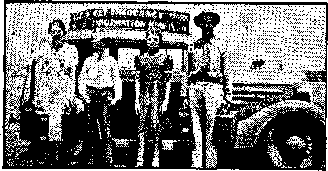
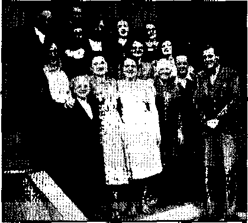
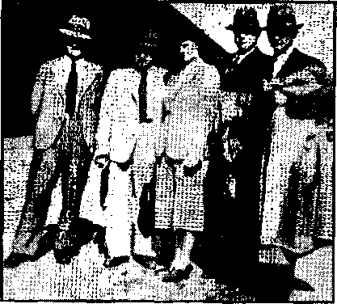

Another Just and Righteous Decision
Jehovah’s witnesses—
Who Are They? What Do They Teach? 11
Helping the Blind at Ida Grove
Facsimile Pages from Morse’s Book
Counsel by J. F. Rutherford
Felix’s Lies Are Unprofitable ■■
Jehovah’s witnesses—Ordained Ministers
British Comment
Published every other Wednesday by watchtower bible and tract SOCIETY, INC.
117 Adams St.r Brooklyn, N. Y,, U. S. A.
• Editor Clayton J. Woodworth
Business Manager Nathan II, Knorr
. Five Cents a Copy
a year in the United States
51.25 to Canada and all other countries
NOTICE TO SUBSCRIBERS
Remittances: For your own safety, remit by postal er express money order. When coin or currency is lost in the ordinary mails, there is no redress. Remittances from countries other than those named below may be made to the Brooklyn office, but only by International postal money order. .
Receipt of a new or renewal subscription will be acknowledged only when requested. Notice of Expiration is sent with the Journal one mofath before subscription expires. Please renew promptly to avoid loss of copies* Send change of address direct to us rather than to the post office. Your request should reach us at least two weeks before the date of issue with which it is to take effect, Send your old as well as the new address. Copies . will not be forwarded by the post office to your new address unless extra postage is provided by you.
Published also in Afrikaans, Bohemian, 'Danish, Dutch, Finnish, Fren.cn, German, Greek, Hungarian, Japanese, Norwegian, Polish, Portuguese, Spanish, Swedish, Ukrainian; also special Australian edition in English.
OFFICES FOR OTHER COUNTRIES
England 34 Craven Terrace, London," W. 2
Canada 40 Irwin Avenue* Toronto n, Ontario
Australia 7 Beresford Road, Strathfield, N S W* South Africa * 623 Boston House, Cape Town
Entered as second-class mutter at Brooklyn, N. under the Act of March 3, 1879.
Sheep Behind Bars
♦ To he placed behind bars for the doing of Jehovah’s will is a great honor, borne successively by Joseph, Jeremiah, Daniel, Christ Jesus, the Son of God, and all the holy apostles.
Nothing could be more foolish than arresting persons for proclaiming the Kingdom for which Jesus taught His followers to pray. Yet that was done in Harlan, Kentucky, to the everlasting z shame of Harlan be it said.
The same thing was done at Connersville, Indiana, where two innocent Christian women were sentenced to from two to ten years in prison for obeying the Lord’s command to preach the gospel of Jehovah’s Kingdom. (And see picture on page 13.) "While one of these “witnesses” was in prison, she received the following letter from a family related only by marriage, and with but an elementary knowledge of the Truth:
This is a hard letter to write, as we have been left nearly speechless by the news of your trial. We keep saying that they just can’t, do sueh things in this country; but they do. We want you to know that our every thought is of you, and if there is anything in our power that we can do, please don’t hesitate to say so. It is pretty hard to tell a person as righteous as you to keep praying and never lose faith even once, as we know that is what you will do. But remember it is persons like you, with your strength and courage, who go ahead, as you do, breaking a path into the future for others, that are the real winners. We wish we were as sure of our place in God’s Kingdom as we are of yours. We learn to hate and despise that low kind that tries to bring shame and defeat to leaders like you. They think they are beating you down, while in reality they are elevating you far above us all. So we want you to know that our hearts and thoughts are with you and that we love and respect you far more now than we had any thought of before.
Mike, Hilda and Carol Sue Greene. •
“And in His name shall the nations hope.”—Matthew 12:21, A.R.V.
Volume XXII Brooklyn, N.Y,, Wednesday, July 9, 1941 Number569
IN June, 1940, Mussolini and his ally, the Hierarchy, at Vatican City, doublecrossed the French and stabbed England in the back. Simultaneously there broke out hysteria instigated by the Jesuit priests all along the southern border of the United States. Many honest, sincere Christians of America were forcibly driven from their homes, and their property destroyed, and they were arrested and thrown into prison. This was done as a result of false charges that the persons thus ill-treated were “fifth columnists”. The facts are that all these ill-tredted persons are witnesses of Almighty God’s kingdom, otherwise known 3s Jehovah’s witnesses. Because they were distributing literature among the people informing them of God’s purpose to rid the earth of fraud and all wickedness and to establish His kingdom of righteousness among men, the Vatican agents in America seized upon the “fifth column” hysteria as an excuse to maul and browbeat these faithful Christians.
About the same time, in Harlan, Kentucky, another company of Jehovah’s witnesses were forcibly seized by beastly fanatics because they engaged in distributing Bible literature among the people, advising them of God’s gracious provision for the blessing of those who devote themselves to the great Theocracy. These faithful Christians, Jehovah’s witnesses, at the instance of the Hierarchy, were arrested, thrown into prison in Harlan, Kentucky, and held in small, filthy cells, incommunicado, for nearly three months, without bail, in one of the hottest of summers, and falsely charged with the crime of “sedition” and “treason” because they worshiped, as the indictment charged, “One Jehovah God,” meaning, of course, Almighty God, whose name is JEHOVAH. This is the same false charge that was framed to kill Christ Jesus, the Son of Almighty God.
The public officials of Harlan, Kentucky, continued to threaten these and other of Jehovah’s ■witnesses with repetition of such prosecution, imprisonment and severe punishment of twenty-one years in the state penitentiary. These all, citizens of the United States, were pursuing their constitutional rights in worshiping God by distributing literature devoted exclusively to instruction concerning His Word.
Those faithful Christians thus persecuted, because of their faithfulness in serving Jehovah God, engaged the services of Mr. Hayden C. Covington, a member of the Texas and of the New York Bar, and who also is a faithful Christian, to take action in their behalf. He instituted in behalf of those Christians a suit in the United States District Court for the Eastern District of Kentucky asking for an injunction that the officers of Harlan County, Kentucky, be enjoined and prohibited from further prosecuting the false charges of “sedition” and “treason” and from interfering with such Christians in. carrying on their work of preaching the gospel by distributing literature explaining God’s Theocracy as set forth in the Bible prophecy.
The case came on for trial before a court of three United States judges, and those presiding at this court were
Honorable Elwood Hamilton, . Circuit Judge;
Honorable H. Church Ford,
District Judge;
Honorable Mac Swinford,
District Judge.
At the trial approximately 100 of the books, booklets, magazines, phonograph records and other publications of the Watch Tower Bible and Tract Society were offered in evidence, such being the publications that at the time of the false arrests of Jehovah’s witnesses by Harlan officials were being distributed by Louis Beeler and others, plaintiffs in the injunction suit. The cause came on for trial, and while the defendants L. 0. Smith, mayor of Harlan, and his political ally Daniel Boone Smith, the Commonwealth attorney in and for that district of Kentucky, and the other defendants with them, also officers, bitterly fought against these Christian people that they might continue to persecute them, they, by Jehovah’s grace, failed completely.
On June 4, 1941, the court of three judges rendered an Opinion in the case, which Opinion speaks forcibly for itself, and is therefore here set out in full:
United States District Court Eastern District of Kentucky
London—No. 64
Louis Beeler, et al., Plaintiffs, v.
L. 0. Smith, Individually, and as Mayor of the City of Harlan, Ky., et al., Defendants.
Findings of Fact, Conclusions of Law and Judgment
This cause having heretofore been heard upon the defendants’ motion for an interlocutory injunction and a final hearing of the suit having been had upon proof introduced by the parties and the cause being submitted for final judgment to the undersigned, sitting as a District Court of Three Judges, and the Court being advised, makes the following Findings of Fact and Conclusions of Law upon the issues herein presented, to-wit:
Findings of Fact
1. That the plaintiffs, Louis Beeler, Elmer Hopkins, Lyndell Carr, S. F. Lehman, M. L. Lehman and Elihu Hurst, are citizens and residents of the State of Kentucky and of the United States; that- each of them is a member of an organization known as “Jehovah’s witnesses” and as such, at the time of the institution of this action and prior thereto, each of them was a duly authorized representative of “Watch Tower Bible and Tract Society”, a corporation engaged ita printing and publishing various books, tracts, pamphlets, periodicals and magazines, which the plaintiffs and other members of the organization “Jehovah’s witnesses”, at the time of the institution of this action and prior thereto, were engaged in distributing, selling and otherwise circulating on the streets and public places in the cities, towns and villages of Harlan County and other counties of the State of Kentucky and in distributing to the residents of the County of Harlan at their homes and elsewhere.
2. That the defendant L. 0. Smith is the duly elected and qualified Mayor of the City of Harlai^ Harlan County, Kentucky; that ' the defendant Daniel Boone Smith is the duly elected and qualified Commonwealth’s Attorney in and for the District of the State of Kentucky which includes the city and county of Harlan; that the city of Harlan is a municipal corporation duly organized and existing under the laws of the State of Kentucky; that the defendant Harmon Noe is Chief of Police of the city of Harlan; that the defendant Lige Howard is the duly elected and qualified Judge of the Police Court of the city of Harlan ; that the defendants Estle Giles and Ben F. Unthank are duly qualified and appointed members of the Police Department of the city of Harlan; that the defendant H. C. Caywood is the duly elected and qualified Sheriff of the county of Harlan, and that the defendant Hubert Meredith is the duly elected and qualified Attorney General of the State of Kentucky. ,
3. That prior to the institution of this action, on or about the first day of June, 1940, the defendants, other than the defendant Hubert Meredith, Attorney General, acting in their respective capacities as public officers of the city Of Harlan, county of Harlan and State of Kentucky, arrested or caused the arrest, imprisonment and prosecution of the plaintiffs upon the charge or charges that by engaging in the distribution, sale and circulation of certain hereinafter described books, tracts, pamphlets, periodicals, magazines and other printed matter the defendants committed the crime of “sedition” in violation of chapter 100 of the Acts of the Legislature of Kentucky of 1920 (Ky. Statutes, sections 1148a-l to 1148a-14, inclusive) and they have since threatened, under color of said statute and by virtue thereof, to continue to so arrest, imprison and prosecute the plaintiffs and other members of the organization of “Jehovah’s witnesses” who may continue to so distribute such printed matter in Harlan County, Kentucky ; that by so doing the defendants, other than Hubert Meredith, Attorney General, prevented the plaintiffs and others of “Jehovah’s witnesses” from continuing to exercise the right to engage in, carry on or pursue their business or activities in circulating, selling or otherwise distributing such printed matter in Harlan County, Kentucky.
4. That the printed matter so distributed or proposed to be so distributed and circulated by the plaintiffs consists of the following books, tracts, pamphlets, periodicals, magazines and printed matter printed and published by Watch Tower Bible & Tract Society, Inc,, to-wit: Book entitled “Salvation”; Book entitled “Deliverance”; Book entitled “Preservation”; Book entitled “Riches”; Book entitled “The Harp of God”; Book entitled “Religion”; Book entitled “Preparation”; Book entitled “Jehovah”; Book entitled “Creation”; Three-volume set of books entitled “Vindication”; 1940 Yearbook of Jehovah’s witnesses; Book entitled “Government”; Book entitled “Enemies”; Two-volume set of books entitled “Light”; Book entitled “Prophecy”; Magazine entitled “Consolation”, of date December 13, 1939; .Magazine entitled “Consolation” of date April 17, 1940; Magazine entitled “Consolation” of date October 4, 1939; Magazine entitled “Consolation” of date April 17, 1940; Six copies of magazine entitled “Consolation” of date, respectively, November 29, 1939; April 19, 1939; October 4, 1939; April 3, 1940; April 17, 1940, and May 29, 1940; Magazine entitled “The Watchtower” of date March 1, 1932; Magazine entitled “The Messenger” of date November, 1938; Magazine entitled “Consolation” of date January 10, 1940; Magazine entitled “Consolation” of date February 7, 1940; Printed Sheet entitled “Kingdom News” dated October 1939; Booklet entitled “Home and Happiness” ; Book entitled “Choosing Riches or Ruin”; Book entitled “His Works”; Book entitled “Uncovered” ; Book entitled “World Recovery” ; Booklet entitled “The Final War” * Booklet entitled “Beyond the Grave”; Booklet entitled “Government and Peace”; Booklet entitled “Judge Rutherford Uncovers Fifth Column”; Booklet entitled “Armageddon, the greatest battle of all times; who will survive ?” Booklet entitled “Government, Hiding the Truth, Why?” Booklet entitled “Protection from those who seek to hurt or destroy me; How can I find it?” Booklet entitled “Hereafter”; Booklet entitled “Safety”; Booklet entitled “Fascism or Freedom”; Booklet entitled “Loyalty; Questions and Answers, Whose Servant, Saluting a Flag; Last Days”; Booklet entitled “Refugees”; Booklet entitled “Warning” ■ Booklet entitled “What You Need”; Booklet, entitled “Liberty”; Booklet entitled “Health and Life”; Booklet entitled “What Is Truth?”; Booklet entitled “Dividing the People”; Booklet entitled “Where Are the Dead ?” ■ Booklet entitled “Universal War Near”; Booklet entitled “Favored People”; Booklet entitled “Supremacy”; Booklet entitled “Righteous Ruler”; Booklet entitled “Neutrality”; Booklet entitled “His Vengeance”; Booklet entitled “Face the Facts”; Booklet entitled “Conspiracy Against Democracy” ; Booklet entitled “Cure”; Booklet entitled “Model Study No. 2”; Booklet entitled “Keys of Heaven”; Booklet entitled “Angels”.; Booklet entitled “Who Is God?” Leaflet advertising the broadcast of Judge Rutherford’s . Lecture “Government and Peace”; Printed sheet entitled “Informant” dated April 1938; Printed sheet entitled “Informant” . dated May 1940;' Two printed sheets of paper entitled ‘Informant” dated January 1940; Printed sheet of paper entitled “Informant” dated February, 1940 ; Two different printed sheets entitled “Informant”, dated March, 1940; Book entitled “1930 Year Book of the International Bible Students Association and Daily Texts and Comments”;■ Book entitled “The Finished Mystery—The Way to Life and Heaven”; Book entitled “Thy Kingdom Come”; Book entitled “The Battle of Armageddon” ; Book entitled “Comfort for the Jews”; Book entitled “Photo-Drama of Creation” ; Book entitled “Riches” printed in the Greek language; Book entitled “Creation”, .printed in the Greek language; Book entitled “Deliverance” printed in the Greek language; Book entitled “Enemies”, printed in the Greek language; Booklet entitled “Angels” printed in the Polish language; Book entitled “What Is the Truth?” printed in the Polish language; Booklet entitled “Dividing the People”, printed in the Polish language; Book entitled “Prosperity Sure”; Booklet entitled “A Testimony”; Booklet entitled “The Kingdom—The Hope of the World”; Book entitled “Advice for Kingdom Publishers”; Placard reading “Religion is a Snare and a Racket”, and Magazine entitled “Consolation” dated April 3, 1940, copies of all of which literature and publications are filed and identified herein as plaintiffs’ exhibits numbers 2-93, inclusive, and defendants’ exhibit numbers 1-3, inclusive.
5. That the plaintiffs are fairly representative of the class or group of persons residing in the state of Kentucky and carrying on similar business and activities known as “Jehovah’s witnesses”.
Conclusions of Law
1. That the plaintiffs are entitled to maintain this action for and on behalf of themselves and all others embraced in the class or group of persons in Harlan County and the State of Kentucky known as “Jehovah’s witnesses”.
2. That this Court of Three Judges sitting pursuant to section 266 of the Judicial Code of the United States has jurisdiction of the parties and the subject matter of this action to restrain future arrests, imprisonment or prosecution of the plaintiffs or others of “Jehovah’s witnesses” on account of the acts herein described under color of chapter 100 of the Acts of the Legislature of Kentucky of 1920 (Kentucky Statutes sections 1148a-l to 1148a-14).
3. That this Court is without jurisdiction to enjoin, restrain or otherwise interfere with prosecutions or other criminal proceedings pending in the Courts of the State of Kentucky under the indictments set out in the petition or otherwise instituted therein prior to the institution of this action.
4. That the sale, circulation and distribution of printed matter described in Paragraph No. 4 of the foregoing Findings of Fact do not constitute “sedition” aS defined by chapter 100 of the Acts of the Kentucky Legislature of 1920 (Ky. Statutes sections 1148a-l to 1148a-14, inclusive), and such activities are not prohibited thereby or in violation thereof.
5, That by threatening to continue to arrest, imprison and prosecute the plaintiffs in the manner and to the extent described and set out in Paragraph No. 3 of the foregoing Findings of Fact the defendants, other than Hubert Meredith, Attorney General, have deprived the plaintiffs of rights, privileges and immunities secured by the Constitution of the United States; that plaintiffs have no adequate remedy at law and on behalf of themselves and other of “Jehovah’s witnesses” they are entitled to a permanent injunction restraining the said defendants from continuing such deprivation.
6. That the provisions of chapter 100 of the Acts of the Legislature of Kentucky of 1920 (Ky. Statutes sections 1148a-l to 1148a-14) are not applicable or effective to prohibit or interfere with the plaintiffs or others of “Jehovah’s witnesses” in circulating, selling or distributing the herein described printed matter and the acts and activities of the plaintiffs in so doing are not violative thereof, therefore the Court concludes it is unnecessary to consider or. determine the question presented as to the constitutionality of the Act.
,7. That the defendant Hubert Meredith, Attorney General of the State of Kentucky, was not a party to any threats to continue the arrest, imprisonment or prosecution of the > plaintiffs or others of “Jehovah’s witnesses”, and since it is stated in the petition that he “is joined in this suit solely because the plaintiffs attack the validity of a statute of the Commonwealth of Kentucky” this action as to him should be dismissed.
J UDGMENT
It is therefore ordered and adjudged by the Court as follows:
L That as to the defendant, Hubert Meredith, Attorney General, this action is dismissed.
2. That the defendants, L. 0. Smith, individually and as Mayor of the City of Harlan, Kentucky, Daniel Boone Smith, individually and as Commonwealth’s Attorney, the City of Harlan, its agents and officers, Harmon Noe, individually and as Chief of Police of the City of Harlan, Lige Howard, individually and as Police Judge of the City of Harlan, Estle Giles and Ben F. Unthank, individually and as members of the Police Department of the City of Harlan, and H. C. Cay-wood, individually and as Sheriff of Harlan County, Kentucky, be and are hereby enjoined and restrained from hereafter arresting, imprisoning or prosecuting the plaintiffs and others of “Jehovah’s witnesses” for or on account of circulating, selling or otherwise distributing in a ppaceable and orderly manner the literature, books, publications and printed matter listed, identified and described in Paragraph No. 4 of the foregoing Findings of Faet, or by threats or otherwise interfering with such activity on the part of plaintiffs and others of “Jehovah’s witnesses”, under color of chapter 100 of the Acts of the Kentucky Legislature of 1920 (Ky. Statutes sections 1148a-l to 1148a-14, inclusive) or upon the ground that such acts constitute “sedition” in violation of any law, statute or ordinance of the State of Kentucky, provided, however, nothing herein shall be construed to restrain or interfere with the defendants or either of them in the performance of their public duties as officers of the State of Kentucky in the arrest or prosecution of the plaintiffs or other persons for trespass or unlawful entry upon private property or other acts in violation of law of the State of Kentucky, or to restrain or otherwise interfere with the prosecution or other criminal proceedings pending in the courts of the State of Kentucky under the indictments set out in tJie petition or otherwise instituted therein prior to the institution of this action.
[signed] ELWOOD HAMILTON Circuit Judge
[signed] H. CHURCH FORD
District Judge
[signed] MAC SWINFORD
District Judge June 4, 1941
A copy. ■
Attest: A. B. Rouse, Clerk.
Thus it is seen that these faithful people; who were pursuing their lawful duty, and the message they distributed, have been fully vindicat ed by the United States District Court above mentioned, which court has decided that they have the right to distribute the literature mentioned without interference from any public officials, and, of course, decided that the literature distributed is not seditious, and that the distributors of the literature are not in any way guilty of sedition, and that the literature did not advocate the overthrow of the government, and that they are not guilty of violation of any other law by distributing it.
There is great force-in the statement, “Truth, crushed to earth, shall rise again.” Ever and anon the unrighteous crush some of the righteous people and crush to earth the truth that the righteous ones are proclaiming. In due time the tables are reversed, and truth rises, to the shame and degradation of those who try to put it down. This reminds us that God has plainly declared in His Word that although the Nazis, Fascists and Hierarchy combine are now trying to overrun the earth and to destroy all truth and freedom of speech and freedom of action, in the very near future God will wipe out for ever all such wickedness, and truth shall rise to prevail forever, and the name of Almighty God, Jehovah, will stand vindicated for ever.—Elton Groves.
The State of South Carolina, In the Supreme Court
City of Gaffney, Respondent,
v.
Shannon E. Putnam, Appellant.
Appeal from Cherokee County E. C, Dennis, Judge
Case No. 2134 Opinion No. 15271 Filed June 2, 1941
REVERSED
Grover C. Powell, of Atlanta, Ga., and C. E. Cooley, of Anderson, for Appellant.
Solicitor Samuel R. Watt, of Spartanburg, and H. R. Swink, of Gaffney, for Respondent.
Fishburne, J.: The Circuit Court upon appeal upheld the judgment of conviction of the defendant, Shannon E. Putnam, in the Recorder’s Court of the city of Gaffney, wherein he was charged with violating an ordinance of the city, the pertinent part of which reads as follows:
“Any person or persons creating any disturbing noises, or making, creating or engaging in any brawl, riot, affray; fighting or indulging in profane, obscene, abusive or vulgar language, . . . shall if found guilty, be subject to a fine . . . .”
There were two trials in the Recorder's Court. In the first trial his conviction was reversed, and a new trial granted upon appeal to the Circuit Court. We are now dealing with the second trial, in which the judgment was sustained. The defendant contends that his motion for a directed verdict of acquittal should have been granted.
The facts which were held to support the conviction of the defendant follow: Putnam is a member of a group known as Jehovah’s witnesses, and claims to be an ordained minister of the gospel. On Saturday afternoon, June 15, 1940, about three o’clock, he was standing upon a corner of a business street in the city of Gaffney, engaged in selling or distributing, or attempting to sell or distribute, the Watchtower Magazine, which is one of the propagandic mediums of Jehovah’s witnesses. In order to call attention to the magazine he would from time to time call out, “Religion is ruining the nations; Christianity will save the people.” While he was so engaged one Ernest Fowler, as he was passing, took exception to Putnam’s statement about religion. He turned, walked up to Putnam, and accosted him with the remark, “Don’t repeat that statement,” or with the inquiry as to what he meant by making that statement. The defendant repeated what he had said about religion and Christianity, whereupon he was immediately given a severe beating by Fowler. He was knocked down several times, and every time he got up he was knocked down again, until a crowd which had assembled stopped the fight. The evidence shows that Fowler was a much larger man than the defendant, and physically superior in every way,
Fowler testified, upon cross-examination by the defendant, who was not represented in the Recorder’s Court by an attorney, “I admit positively I was the*aggressor in this assault; but you fought me back all the time. I started it. I hit the first lick. . . . You were saying 'religion was ruining the nationI don’t see what else it could be except abusive, vulgar language.” '
It is true that in another portion of his testimony the witness Fowler attempted to qualify in some measure his foregoing statement. He said thak when he walked up to the defendant, “We had a word or two, and he kind of turned one of his papers loose and done like this (indicating with clinched fists), and when he did I hit him. I don’t know whether he was going to hit me or not. I just knocked him down a time or two, and he came back.” After describing further blows delivered by him Fowler said, “I quit then and stepped back, and he never made no other attempt.”
There were two or three eye witnesses, all of whom were merchants who operated nearby stores. They testified to hearing the defendant say "Religion is ruining the nations; Christianity will save the people they saw Fowler walk up to the defendant and address some words to him, which they did not hear, and they witnessed the fight which immediately followed. All of them said that Fowler was the aggressor, and that he administered a severe beating to the defendant.
The Chief of Police, Mr. Julian Wright, was not present at the fight, but just a short time before he had passed Putnam and saw and heard his efforts to sell or distribute the Watchtower Magazine. The officer said that he at that time was not violating the ordinance, but because he had heard that some of the citizens had become offended on account of the statement made by the defendant concerning religion, he had advised him to move on, being afraid that he would get into trouble. But there is no evidence that he communicated his apprehenswn of danger to Putnam, The officer further stated that he reached the scene immediately after the disturbance, and that he arrested the defendant' and had the warrant issued solely on account of the disorderly conduct arising from the fight. We may say in passing that Fowler was also arrested, and paid the fine assessed against him for fighting in violation of the city ordinance.
It is entirely clear, as manifested by the record, that Fowler was the aggressor. Nor can there be any reasonable doubt but that he made the assault solely because of the statement uttered by Putnam. The testimony shows that the defendant’s remark which offended Fowler was not addressed to him or to any individual personally, but to the public at large. It does not appear that he had ever seen Fowler before, or that he had any reason to believe that his words would be personally offensive to him by reason of the latter’s religious views or convictions. There is no showing that the defendant’s deportment was noisy, truculent, overbearing, or offensive. He indulged in no opprobrium or abuse of the public, or of Fowler, So far as the evidence shows, he wished only to interest those who passed by in his propaganda.
In the instant case the defendant was not guilty, in our opinion, of any assault, and it is clear that Fowler, who provoked the difficulty and was the physical aggressor throughout, had no reasonably well founded apprehension of bodily harm or danger to his person. So that the real question presented by the appeal is whether the words concerning religion and Christianity, spoken under the circumstances above narrated, addressed to the public at large, constituted of themselves sufficient legal justification for the assault made by Fowler. It is plain that they do not.
In view of the fact that peace and good order forbid that individuals shall right their own wrongs, we have announced the rule in numerous cases that in the absence of statute, mere words, no matter how abusive, insulting, vexatious or threatening they may be, will not justify an assault or battery, unless accompanied by an actual offer of physical violence, —although they may mitigatethe punishment. State v. Cooler, 112 S. C. 95, 98 S. E. 845; State v. Workman, 39 S. C. 151, 17 S. E. 694; State v. Jacobs, 28 S. C. 29, 4 S. E, 799; State v. Jackson, 32 S. C. 27, 10 S. E. 769.
Nor can it be successfully contended that in attempting to defend himself under the facts in this ease, Putnam was guilty of assault upon Fowler, One acting in self-defense to repel an unlawful attack is not guilty of assault; he may repel force with force and continue his self-defense as long as the danger apparently continues.
By several exceptions, and in his printed brief, the defendant attempts to show that his constitutional rights have been violated, with special reference to religious freedom and liberty of speech and press under the First and the Fourteenth Amendment to the United States Constitution, and Article I, Sections 4 and 5 of our State Constitution. These exceptions are so indirectly connected with the issue which we have already passed upon that they hardly need be discussed. No one would deny the postulate that a state or muncipality may not by statute or ordinance wholly debar the right to preach or to disseminate religious views. Clearly an absolute restraint would violate constitutional guaranties. As was said in State v. Langston, 195 S. C. 190, 11 S. E. (2d) 1:
“In this state there are so many religious
beliefs, so varied in what they teach and with such great difference, that one of the most fruitful, and yet fruitless, sources of argument is some theological question. It certainly cannot be said that there is not in this state an absolute freedom' of religion. A man may believe what kind of religion he pleases or no religion, and as long as he practices his belief without a breach of the peace, he will not be disturbed.” And see generally Morison v. Rawlinson, 193 S. C. 25, 7 S. E. (2d) 635.
It must be kept in mind that the common law offense of breach of the peace is not charged here. The charge against the defendant was founded upon the broad and general phraseology of the ordinance hereinabove set out. But in Cantwell v. Connecticut, 310 U. S. 296, 84 L. Ed. 1213, the Court dealt with a case involving two members of Jehovah’s witnesses, charged with a breach of the peace. In that ease the defendants, with a portable phonograph, on one of the public streets of New Haven, Connecticut, played a record which included an attack upon the Roman Catholic Church. This record gave offense to two members of that church who heard it. They made no physical attack upon the “Witnesses,” but the latter were charged with a breach of the peace. We quote some portion of the opinion of the Supreme Court because the discussion has a general bearing here:
“In the realm of religious faith, and in that of political belief, sharp differences arise. In both fields the tenets of one man may seem the rankest error to his neighbor. To persuade others to his own point of view, the pleader, as we know, at times, resorts to exaggeration, to vilification of men who have been, or are, prominent in church or state, and even to false statement. But the people of this nation have ordained in the light of history, that, in spite of the probability of excesses and abuses, these liberties are, in the long view, essential to enlightened opinion and right conduct on the part of the citizens of a democracy.
‘‘The essential characteristic of these liberties is, that under their shield many types 10 of life, character, opinion and belief can develop unmolested and unobstructed. Nowhere is this shield more necessary than in our own country for a people composed of many races and of many creeds. There are limits to the exercise of these liberties. The danger in these times from the coercive activities of those who in the delusion .of racial or religious conceit would incite violence and breaches of the peace in order to deprive others of their equal right to the exercise of their liberties, is emphasized by events familiar to all. These and other transgressions of those limits the states appropriately may punish.
“Although the contents of the record not unnaturally aroused animosity, we think that, in the absence of a statute narrowly drawn to define and punish specific conduct as constituting a clear and, present danger to a substantial interest of the state, the petitioner’s communication, considered in the light of the constitutional guaranties, raised no such clear and present menace to public peace and order as to render him liable to conviction of the common law offense in question.”
It follows from what we have said, that'the defendant’s' motion for a directed verdict in the Recorder’s Court should have been granted.
Judgment reversed.
Bonham, CJ., Baker and Stl’kes, JJ,, concur.
Biloxi May Go Red
♦ The city of Biloxi, Mississippi, is in a bad way. It may go red at any minute. Jehovah’s witnesses were arrested for preaching the gospel. The court dismissed them, but warned them that if any of the community misbehave while the witnesses are in town it is the witnesses that will be arrested. This is all regular. It would never do to arrest the troublemakers; they might not like it. And besides all that, the priests and preachers might not like it.
MANY readers of the Evening Dispatch must be asking the above questions, and also wondering why Jehovah’s witnesses are being so much featured in the Press at the present time. As a keen student of the Bible, let me endeavor to give as accurately as possible a short summary that may be of some assistance to readers, particularly those who have read the Church of Scotland leaflet dealing with this subject.
Jehovah’s witnesses do not claim to be a sect or a religious organization. They claim to be in the class of faithful men referred to in the eleventh chapter of Hebrews, whose main purpose is to inform the people of God’s purpose to establish a righteous government on the earth, and in obedience to God’s commandments to warn the people of the impending disaster upon the nations.
Their only claim is to be true Christians, and hence there is nothing modern about their origin. They take their stand on Isaiah 43:12, which states, “Ye are my witnesses, saith Jehovah, that I am God.” ■
Jesus Christ is the chief witness of Jehovah, and all true Christians right down the ages have been or are Jehovah’s witnesses. They obey every law of the land that is not in conflict with God’s law. They do no injury to anyone. They have nothing against individuals because of their religion, but, in order to bring out the truth, they cannot avoid exposing the errors of religious systems which, they claim, teach the traditions of men in place of the truths of the Kingdom.
Fated to Persecution
They are hated by Satan and all Satan’s agencies, who persecute them and say all manner of evil against them falsely. That is why they do not bother to contradict the false allegations now being made against them. Instead of being discouraged by such misrepresentations, JULY 9, 1941
they are encouraged by the further evidence that their textbook, the Bible, is true. They know that their Leader, Jesus, was crucified for telling the truth, and they also know that His followers must also undergo persecution, must be unwmpt, unhonored, and unsung by the world, and, above all, will be persecuted by the nominal churches just as Christ was.
Their doctrine, which they claim to be based solely on Scripture, may be summarized thus:
(1) That Jehovah’s organization is a Theocracy called Zion, and that Christ Jesus is the Chief Officer thereof, and is the rightful King of the world; that the anointed and faithful followers of Christ are children of Zion, and are his ■witnesses, whose duty and privilege it is to testify to the supremacy of Jehovah, declare His purposes toward mankind as expressed in the Bible and to bear, the fruits of the Kingdom before all who will hear.
(2) That Satan’s rule on earth is about to end, and the Lord Jesus Christ has been placed by Jehovah upon His throne of authority, has ousted Satan from heaven and is .proceeding to the establishment of God’s kingdom on earth.
Satan’s Final Fling
(3) That Satan has been given his notice to quit and is “shooting the house down”, using wicked men such as Hitler, Mussolini, Stalin, 'and others as his earthly accomplices.
(4) That at Armageddon,, which is’a battle between the heavenly hosts and the Satanic hosts, and which will take place in the near future, Satan’s earthly organization will perish.
(5) That the relief and blessings of the peoples of earth can come only by and through Jehovah’s kingdom under Christ, which has now begun. That the Lord’s next great act is the destruction of Satan’s organization and the establishment of righteousness in the earth, and that under the Kingdom the people of good-will that survive Armageddon shall carry out the divine mandate to “fill the earth” with a righteous race.
Hitler's Victims .
In a recent leaflet issued by the Watch Tower Bible & Tract Society, which acts as publisher for Jehovah’s witnesses throughout the earth, the following statements appear:
The British people today know they are fighting against the most wicked and iniquitous combine of enemies ever organized to destroy freedom and true Christianity in the earth. Britain alone stands firm, battling against the religious and totalitarian combined enemies in her fight for the rights of a free people.
Since 1933 Hitler has stamped out the Christian work of Jehovah’s witnesses in Germany. He has imprisoned, maltreated, and killed many of these faithful servants of the Most High God because of their stand for the open Bible and for God’s Kingdom. Today over six thousand of Jehovah’s witnesses languish in Hitler’s concentration camps.
Strange as it may seem, Hitler engages in a crusade for the re-establishment of the Holy Roman Empire.
Before an American audience of 45,000 of Jehovah’s witnesses on Sunday, July 28, 1940, Judge Rutherford, . , . who continually tells Jehovah’s witnesses that they have no earthly leader but that Christ alone is their leader, made
Blessed family of Kingdom publishers, Guymon, Oklahoma
the following statement amidst great applause :
Britain alone stands firm, battling against the religious totalitarian combine in her fight for the rights of a free people. Britain has been kind to Jehovah’s witnesses, and because of that kindness shown it may be expected that Almighty God will show some special favor to Britain in her hour of terrible distress.
The Right to Fight
In conclusion, Jehovah’s witnesses are enjoined not to try to dissuade anyone from taking up arms in defense of his country. Individual witnesses may take the view that their personal covenant to carry out Jehovah’s work of witnessing at this time may preclude them from taking up carnal weapons, but that is left entirely to the individual to decide.
As regards those who have not entered into such a covenant, Jehovah’s witnesses feel that it is quite natural for such to ' battle against the evil things. They do not criticize them for this in any way, but they know that the number of people who will have the courage to enter the covenant, bringing, as it must, scorn and persecution and misrepresentation in its train, is so small that it cannot affect the issue. It is simply a fact that in Germany it was much easier for a witness to “heil Hitler” and go with the crowd than to refuse to do so and languish in concentration camp or be shot.
However angry one may feel with conscientious objectors—-and there is no use hiding the fact that in this struggle against evil most people do feel angry with them—one cannot truthfully maintain that Jehovah’s witnesses who take their stand as objectors in Germany are cowards. It takes great courage, both physical and moral, to be a true Christian in any totalitarian country today. It is also true that even in this country it is much harder to be a Jehovah’s witness than not to be.—Bible student, in the Edinburgh, Scotland, Evening Dispatch, February 13, 1941.
Connersville, Indiana, entertains Jehovah’s witnesses (74 of them) unawares, as well as illegally (men and woman confined in the same room) seven days, without beds and without sufficient food.
Thomas McEwan Finished
♦ The Catholic Times of April 4, 1941, carried a notice of the death of “Rev. Er.” T. McEwan of Clydebank and mentioned some of that gentleman's accomplishments. It said nothing, however, about his greatest claim to infamy, the persecution of Jehovah's witnesses in 1939 (March 5), at which time he interfered with a sound-van proclaiming the gospel of the Kingdom of God at hand. He, with another clerical anarchist, stirred up a mob and threatened to push over the car and set it afire. Jehovah’s witnesses were charged with “disturbing the peace” although the “Reverend” disturber himself is entitled to all the credit for any disturbance that occurred then and subsequently. That was'just two years ago. He has now finished for ever the exploiting of the ignorant and.the persecuting of the truth-proclaiming servants of Jehovah. He died almost on the anniversary of his infamous attack on the witnesses of the Lord.
Resolution
♦ Two thousand of Jehovah’s witnesses residing in Greater London, in assembly at the Golders Green Hippodrome, Sunday, January 19, 1941, considered and unanimously adopted the following resolution:
Whereas the press has reported that JULY 9, 1941 .
the activities of Jehovah’s witnesses have been considered subversive in Canada, New Zealand and Australia and that their legally constituted organizations, namely, the Watch Tower Bible & Tract Society and the International Bible Students Association, registered in London, have been declared illegal— Be it resolved—
1. That we greatly deplore the action taken by the Canadian, NewT Zealand and Australian governments in recently banning the Christian activities of Jehovah’s ’witnesses in those lands.
2. That the charges of being “disloyal,” “causing disaffection,” “deliberately calculated to destroy national morale and hamper the war effort” and “denouncing citizens of the British Empire as followers of Satan” cannot be true and must be without foundation.
3. That as Jehovah’s witnesses we are loyal, law-abiding citizens of Britain and fully render unto Ca?sar the things that are Ciesar's and render unto God the things that are God’s.
4. That we are not engaged in a work of spreading disaffection. Our Christian activities are confined solely to preaching the Gospel of Christ’s Kingdom, The Theocracy, which is the only hope of mankind.
5. That the purpose of our Christian service which has been carried on in this
country for the past sixty years is to bring comfort, hope and consolation to people of good-will who love righteousness ; that this Christian work conducted in Britain during the past sixteen months of the war has strengthened the hopes and courage of thousands of persons who had lost faith in God because of the hypocrisy of religion.
6. That, as an organization, Jehovah's witnesses have not counseled nor encouraged its associates to become “conscientious objectors”; that such a charge, when made, is wholly false as well as any charge that we have “hampered the war effort”. (There are many in the forces today who favor the message of the Kingdom of God under Christ yet are loyally serving in the various services.)
7. That the policy of the Society representing Jehovah’s witnesses is never to denounce a person for his beliefs. The Society has never violated that principle and has never denounced any citizen of the British Empire or any citizen of any other government. Jehovah's witnesses have denounced the evils of organized religion and the religious efforts of the Roman Catholic Hierarchy at Vatican City in supporting such wicked forms of gangster rule as Nazism and Fascism.
8. That Jehovah’s witnesses are not pacifists; but believe in combating and exposing the evils of this day by using the sword of the spirit, which is the Word of God, and are wholly determined to continue to fight against the Catholic-Nazi-Fascist element.
Workers at the Kingdom Farm, Essex, England
14
Manchester, England, Pioneer Home and staff, with A. D. Schroeder, London Branch servant, at extreme right
9. That Jehovah’s witnesses in Britain who themselves have lost thousands of pounds’ wrnrth of property and goods, and some of them even life itself, are cooperating with their friends and neighbors in defending their homes and property against the wicked Nazi demons’ air warfare.
10. That the false accusations brought against Jehovah’s witnesses in Canada, New Zealand and Australia have evidently been brought about by leading Catholic religionists in those lands; that such continued persecution of innocent Christians in those countries wull certainly bring upon such the disfavor of Almighty God. (Do Canada, New Zealand and Australia desire to follow the Fascist policy of the Catholie-controlled countries of the continent where they have suppressed the activities of Jehovah’s witnesses' because of their stand for true Christianity? Do Canada, New Zealand and Australia desire to join Nazi Germany in their -wicked persecution of Jehovah’s witnesses ? In Germany alone today six thousand of Jehovah’s witnesses lie in Hitler’s concentration camps, and some have been foully murdered, martyrs to their Christian cause.
consolation
Theocracy publishers, refugees from Czechoslovakia arriving in Brazil
See Sir Neville Henderson’s report in the British White Paper Cmd. 6120.)
11. That as Jehovah’s witnesses we commend the stand of the British Government against the religious-totalitar-- ian combine and appreciate their kindness in permitting us to faithfully carry forward our Christian work of preaching the Gospel and in continuing to grant us the right of the freedom of assembly and worship.
12. That as Jehovah God’s servants we champion His name, and are this day resolved to renew our covenant relationship with Him, the Almighty God, and are determined to be found faithful unto the end in performing His commands; that we will faithfully continue the work of the apostles, and the Protestant reformers in exposing the iniquity of the Boman Catholic Hierarchy, and continue to help people of good-will to serve Jehovah’s glorious heavenly government, the Theocracy under Christ.
Unanimously adopted this 19th day of January, 1941.
Signed, A. Pryce Hughes (chairman).
Copies sent to the governments of Canada, New Zealand, Australia and to the Home Office, London.
JULY 9, 1941
Helping the Blind at Ida Grove
♦ June 8, 1941, Consolation No. 567 was placed in every home in Ida county, Iowa. Some resisted the light “because their deeds were evil” (John 3:19); there were assaults upon the innocent, and arrests of the malefactors followed, but the distribution went through as planned. Illegally mobbed out of one town, one of the witnesses went back into the town and finished his job. Such faithfulness is bound to have and does have the Lord’s approval and blessing.
Back to Sanity
♦ A paragraph in the Wilkes-Barre (Pa.) Independent says that “no matter how much the average person decries the ideals of Jehovah’s witnesses one has to admire the pluck and courage of these determined men who are carrying the torch” of truth and liberty. That is sanity.
'New Order’ Called Pope’s
ROME, June 9—(UP).—An editorial in the Turin newspaper Stampa said today Germany and Italy are organizing a new European order in conformity with the principles laid down in the Encyclical Rerum Novarum, to which Pope Plus called, attention in his June 1 speech.
Post-war Europe, the editorial said, will be a group of States whose national sentiments will be subordinated to a greater Europe. The new order already is being placed in operation, it added.
N. Y. Journal-American
MONDAY, JUNE 9, 1941
{To be continued)
rwriie.
VBfiPACB.
tWICB.
19
ions 1 I will give nay readeri * brief account of him, abridged from Iha Encyclopedia Americana, (edited by a German,) sufficient to enable them to judge if too much stress is laid upon his opinions, “ Frederick Schlegel, (one of the great literary stars of Germany,) went over to the Catholic faith, at Cologne, and in the year 1800 repaired to Vienna. In 1809, he received an appointment nt the head-quarter* of the Archduke Charles, where he drew up several powerful proclamations. When peace was concluded, he again delivered lectures in Vienna on modern history and the literature of all nations. In 1812, he published theGcrmoD Museum, and gained the conjidenee of Prince Metternich by various diplomatic papers, iu consequence of which he was appointed Austrian counsellor of legation al the Diet in Frankfort. In 1818, he returned to Vienna, where he lived as Secretary of the Court. and Counsellor of Legation, and published a view of the Pre*enl Political Kefaiionitof Austria.] and hii complete works.11 In 1828, he delivered his lectures on the Philosophy of History, in which his views as I have stated them are fully developed.
This is the man whose opinions on the relation of Popery and AZonarcAy, and of /VofwtanZuw and Wrpubi tennis w, and of the influence of the United Slates, have been followed by the action of the Austrians, in the formation of the Sr. Leopold Foundation. Ifti wtu part and parcel of the. government, hC Wag UNE OF THE AUSTRIAN CABINET, THE CONFIDENTIAL Counsellor of Prince Metternich !
Let rne now examine matters nearer home. How far are the Roman Catholics of this country to be considered as implicated in this Conspiracy ? This is indeed a grave question, and one which demands serious attention, lest we should be, on the one hand. Loo regardle^ of danger from them, and on the other, unjust to those who are innocent. We are told that they disclaim hostility to our free government, (hat they profess the warmest friendship to our uemo-cratic institutions. I readily concede that there hu 2*
been, and are now, many true patriots among thia sect, many estimable mei of sound political Ytewt, sincere in supporting the democratic ins ri tut ions rf the country ; but making the most itjiple al Iowa ace, they are but exceptions to the rule. The sect, as a sect, is still justly chargeable with the tendency of its acknowledged principles. If a 7?amart CaMo/fe in Me United State* ia a Democratic Demihfirart, Ae fs so fn eptle of and in oppotrtton to, Me eyafem of Ais cAurcA, and not in accordance viM if. To the truth of this fact, the arguments of Schlegel, a Catholic, and the profoundesl investigator of the subjeer ip the pre sent ageA are unanswerably conclusive From their principles of fjajufur obecfieHCe, and the demal of the right of private judgment alone, Ro man Catholics, as a sect, must be ignorant and will ing slaves to ibe schemes of any despotic ecelesi □stic that a /oreign power may see fit to send to this country to rule over them. The secret phnn, the real designs of the Jesuits may be confined to few bosoms, it is by no means necessary that the mass of the sect should have any knowledge of the plot for from the nature of their system they may be blind instruments of the few.j fi J
Mopery and despotism arc notoriously united in the Austrian government, and Protestantism and Republicanism in that of tlie United State*. At the time I adduced arguments to prove the truth of these two categories, I was wholly unapprtzed thut so dis linguished a political writer as Schlegel had taken the !>arne views of these opposite systems, to rouse Austrians to the defence of their own category. A powerful argument is derived from this corroboration of an important political truth, by Schlegel, who wriies in rhe interest of absolutism, to urge all true friends of liberty on this side of the water, to the vigorous maintenance of the American category. It is a truth now no lunger to be questioned, that Popery 13 so naturally the ally of Absolute government, that the diffusion of the former will result in producing the latter, and it is equally true, that the dif-
of Pro testant iuu will result in the production of liberal institutions. What, then, lb the duty of Americatt*tLall who really love their own free system of government? There can be but one answer. They must unite in giving every facility to the spread of Protestant principles. Patriotism demands thst every Protestant religious sect be encouraged to promote its own views, each according to (he dictates of conscience; and patriotism equally demands the tJwroura^emenl, in every lawful way, of th? further introduction of Popery and Popish influence into the country J Popery is the a«tggonfe? to otiF/ree jyr-|em’. No one can doubt that the unusual efforts of despotic foreign governments to spread Popery in the United States, has for its principal design Che subversion of our republican institutions. Ought a vaunted but apurtoua charzfy to be allowed to mind the eyes of Americans to the evidence of the attack made upon them ? ought they Co aid these foreign conspirators, by adding their own contributions to the means of spreading Popery ? ought they to encourage the schools of Jesuit agents; their immoral nunnery systems; their stave-making seminaries, by placing American children within the pale of their discipline? ought they to court Jesuit inHuenre in our politics, and screen their political principles from examination, on the plea that this is merely a reli-giou* controversy ? Let patriotism answer these questions J1 "' 1 ‘ 1 J
I will now examine the dredafmer of hostility to our republican institutions, (to which I have alluded.) made in behalf of the Catholics in ibis country, by a Catholic journal. As a Unitarian paper in Boston has quoted it with satisfaction, 1 give it here, with the Unitarian editor’s remarks prefixed :— CATHOLIC piRCLAIMER.
“We have no doubt that th? Roman Catholics have their due share of proselyting spirit. Some of our good people, clergy and laity, would have a poor opinion of their sinceiity if they were destitute of that spirit. But (he cry is—‘Conspiracy againtt
Facsimile pages from the valuable work by Prof. Samuel F. B. Morse, Foreign Conspiracies Against the Liberties of the United States. Although published a good many years ago, by the Van Nostrand publishing house, of New York, the work is as significant today as when written. Professor Morse warned President Lincoln of his impending assassination by tools of the Jesuits, and wrote an introduction to the book Confessions of a French Catholic Priest, also published by the Van No strands, and reviewed in Consolation No. 561.
WHO controls the world? Why must a change of world control shortly come to pass? what shall come to pass at the end of the world, where we now are, was foreshadowed by what came to pass in connection with an ancient nation of Biblical record. The nation of Israel began to function while domiciled in Egypt. There the people of Israel pictured or represented the people now on earth who are on the side of Jehovah God and His Messiah and wdio desire to see righteousness control and oppression end. Pharaoh, the oppressive king of Egypt, stood for Satan, the invisible ruler or “god of this wnrld”. Pharaoh and the officers of his government heaped great oppression upon the Israelites. Jehovah God sent Moses and Aaron to Egypt to be witnesses to His name and power. There Moses was a type of a greater Prophet, Christ Jesus, while his brother Aaron was a type of the spiritual brethren of Christ, Jehovah’s witnesses working under the direction of Christ Jesus. God commanded Moses and Aaron to go before Pharaoh and demand that the people of Israel be permitted to go and serve and worship God in the way that Jehovah had appointed for them. Pharaoh refused to grant that request. Then God commanded Moses to bring plagues upon Egypt, that the rulers and the people might be informed and warned that Jehovah is the Almighty God and that His cominandments must be obeyed. In all there were ten plagues that befell Egypt. The ninth was that of great darkness over all the land except that part where God’s chosen people were, and there the Israelites had complete light, a special favor.
JULY 9, 1941
Now at the end of the world Jehovah has sent Christ Jesus, the Greater Moses, and has sent forth His witnesses, pictured by Aaron, and commanded that His testimony must be given to the world rulers and the people that Jehovah is the Supreme One and that His people shall be permitted without interference to worship and serve God in the way He has appointed for jthem because the world has ended and the kingdom of God is at hand. The serving of such notice and warning constitutes the fulfillment of the nine plagues on Egypt; which nine prophetic plagues have been fulfilled upon the world rulers. As the ninth plague was great darkness, just so now the rulers of the wmrld are in great darkness as to God’s purpose, because they refuse to give heed to God’s truth. The only exception to this great darkness is that those persons who have taken their stand on the side of Jehovah God and His kingdom by Christ are now enjoying the light of God’s Word and are directed by it in the right course. At the conclusion of the ninth plague upon Egypt Pharaoh said to Moses and Aaron: ‘Be gone and see me no more.’ Even so now, after the ninth prophetic plague has been served upon the wrnrld rulers, they have in effect said to Jehovah’s witnesses: ‘Be gone and let us have no more to do "with you.’ Pharaoh defied Jehovah God. The world rulers are now doing the same thing. They oppose J ehovah’s witnesses and spurn. God’s warning, and they reject God and His kingdom. Hence Jehovah’s witnesses must nowT bring to the attention of the people of good-w’ill toward God the message of notice and warning, concerning the battle of Armageddon and God’s kingdom, even as Moses and Aaron gave special instruction to the Israelites just before the tenth plague came upon Egypt.
The tenth and last plague which Jehovah sent was this: He sent His angel throughout the land and slew every one of Egypt’s firstborn, but gave protection to the firstborn of the Israelites because
17
they obeyed His commandment, showing faith in man’s Redeemer. The Israelites immeiiiately left Egypt and were pursued by Pharaoh and his official organization, ail of whom were destroyed in the Red sea. That foreshadowed or pictured Armageddon, which will mean the complete destruction of Satan’s rule of this world, both visible and invisible.
The Scriptures reveal that God never takes advantage of the ignorance of anyone, but always gives notice and warning before taking action to vindicate His name. Mark this, that He caused Noah to testify to men and angels of God's purpose to destroy the world before Me brought the flood, 'which destroyed, not the literal earth, but the world. 11 e caused Moses and Aaron to give full notice and warning to Egypt, and then came the destruction of that world power. He caused Jesus to give fair notice and warning to the rebellious nation of Israel, and thpn followed the destruction of that nation. Now Jehovah has caused His witnesses to give full and fair notice and 'warning to the rulers of this world; and when this witness work is completed, there shall quickly follow the complete destruction of the 'world. The flood, the destruction of Egypt, and the fall of Jerusalem brought great- trouble upon the people, but Jesus declares that Armageddon shall bring upon the world the greatest tribulation ever known, and that it will be the last.- Matthew 24:14, 21,22.
Armageddon will not be fought between men of the nations of earth. It is the “battle of that great day of God Almighty”, in which Christ Jesus and His angels will fight against Satan and his wicked host, and Christ will be completely victorious. Mark now the inspired words of the Record, in 2 Peter 3: 3-12: Tn the last days shall come those who will deny and scoff at the kingdom of God, and for this they are ■willingly ignorant of the truth, that by God's word the heavens and earth of old that constituted the world that then was, being overflowed with water, perished. But the 18
heavens and earth ■which are now, by the same word are kept in store, reserved unto destruction against the day of judg- ’ merit and perdition of ungodly men. . . . Look tor and haste unto the coming of the day of God, wherein .the heavens, being on fire, shall be dissolved, and the (dements f the visible ruling powers on earth J shall melt with fervent heat.’ These inspired words recorded in the Bible tell what shall shortly come upon the world, making a*complete end of Satan’s rule, thus clearing the way for the righteous rule of Christ Jesus.
Continuing, the apostle Peter says (verse 13) : “Nevertheless we, according to his promise, look for new heavens and a new earth, wherein dwelleth righteousness.” This marks the complete change of world control, the “new heavens” being The Christ, or invisible Theocratic rule, and the “new earth” meaning the resurrected faithful men of old, from Abel to John the Baptist, who being resurrected as perfect men shall become the visible rulers in the earth; and that rule shall be one of righteousness.—See Psalm 45:16; Isaiah 32: 1.
i In Revelation 21 the new rule of the world is symbolically called “the holy city” (or organization), coming down from God out of heaven. This holy and righteous rule under Christ shall bring the greatest blessings to the people. Exercising His supreme power through Christ Jesus, Jehovah, the great God of the universe, will then bless all the people who obey His righteous law. “And God shall wipe away all tears from their eyes; and there shall be no more death, neither sorrow, nor crying, neither shall there be any more pain: for the former things are passed away. And he that sat upon the throne said, Behold, 1 make all things new . . . ; these words are true and faithful.” (Revelation 21: 4, 5) Thus the change of world control just at hand not only will bring relief to suffering humanity but will bring boundless blessings and endless joy to those who obey Jehovah God and His King.
Mr. Felix, O.S.B., tried to make a living by lying about Judge Rutherford, but he could not make it go. March 1,1939, he was trying to form an endless chain of people that would send him 25c a week for 25 weeks. Twenty-two days later he was pleading, “Please try to help us, and get some of your friends to help ns.” Six months later he said, ‘AVe are greatly handicapped for Jack of funds,” and that he was changing his address. In other words, he had to leave town. *
On one occasion Mr. Felix was so anxious to get Judge Rutherford in wrong with the public that he accused him of writing a tract entitled ‘Me Are the Salt of the Earth”, which Judge Rutherford never wrote, never saw and never heard of, until Felix accused him of writing it.
In one of his arguments for money Mr. Felix figured out that Jehovah’s witnesses spent $6,000 a week for'broadcasting the truth. That was a good advertisement. Suppose they did. If they did, they paid their own bills, which is something the Roman sect never does except under compulsion.
Mr. Felix found it necessary or expedient to move'from Pilot Grove,'Missouri, to Conception, Missouri, from which place [1.3 miles from Clyde, Mo.] he has now blossomed forth with a four-page leaflet entitled “Defenders of the Faith”, i.e., defenders of the wholly un-scriptural, unreasonable and denionistic teachings of the Roman Catholic Hierarchy. In his leaflet Mr. Felix says that seventy-five bishops and archbishops have given their warm approval to his lying attacks upon Judge Rutherford. This, by the vray, is about the number of the German bishops and the Italian bishops who stand behind Hitler and Mussolini to a man, or, at least, if not to a man, to a person dressed in skirts who claims to be a man.
Felix’s new scheme is to land 4,200
JULY 9, 1941
suckers who will pay him 25c a week to attack Judge Rutherford over the radio. He says that “Communists and nearCommunists like Rutherford and his witnesses of Jehovah are found everywhere”. Mr. Felix well know’s Judge Rutherford is not a Communist and that Jehovah’s witnesses are not permitted in Russia. He also knows that Judge ■ Rutherford has pointed out conclusively a desire of the Hierarchy for co-operation -with the Communists and it is only very" recently, in January, 1941, that Pacelli sent his thanks to Stalin, through their mutual friend, Hitler, for favors received in Russia by the Hierarchy.
Real Work for Mr. Felix - '
Most priests of the Roman Catholic church have great difficulty not only in telling the truth but in minding their own business. If Mr. Felix desires work, why does he not devote his time to cleaning up some of the vicious practices of his fellow-priests in his ovm State of Missouri? For instance, maybe he could do something to put a stop to this awful lie about there being suclj persons as “Eucharistic angels”. The Roman Catholic heresy lays great stress on the theory that priests of that cult can order Christ Jesus to come down from His throne in heaven and be sacrificed all over again, and thus the churches of the sect are the tabernacles of God. Ofcourse, that theory is wholly false. The invention of one lie makes necessary or advisable the invention of another one, and the latest is that there are “Eucharistic angels” who join with the Benedictine Convent of Perpetual Adoration, Clyde, Missouri [1.3 miles from Felix’s hangout], “in offering adoration, praise, thanksgiving and atonement to the King of Ages concealed beneath the thin white veil of the sacred Host.”
Again, perhaps Mr. Felix can do something to cut down the disgraceful conduct
of his fellow racketeer “Reverend Father” Charles Maxwell, pastor of the Ave Maria Shrine, of St. Louis, Missouri. Mr. Maxwell1 operates a camp for underprivileged boys, seven miles from Hillsboro. On a Sunday afternoon the sheriff, a deputy sheriff and a state trooper dropped in, picked up four slot machines, and snatched $18.35, the stakes of two crap games. There wrere 1,500 men and boys on hand. They threatened the sheriff, let the air out of his tires, and said they were going to raise hell. But he finally talked them out of it and arrested the “Reverend Father” and another gambler running the racket.
Lots of Work at Clyde, Missouri
The city of Clyde, Missouri, is, by rail, [as stated] only one and three-tenths miles distant from where Mr. Felix hangs out, and. if he is pining for work there is lots of it foijhim at Clyde, where he manifestly is right now. He could straighten out this “holy -water” business. The civic fire departments render free service,' but not so these ecclesiastical roosters. They sell it by the bottle. They could “bless” a pipe line, or a barrel, or a reservoir, if they wished, but that would cut into the revenue. So “holy water” is sold, not even by the demijohn, but by the flask. Water is so plentiful on the earth, and is of itself such a necessity and a blessing to mankind, that one can but wonder that any bunch of racketeers would dare say that only that which they have handled is blessed. The following sales arguments are taken from a little 32-page booklet, price 5c, which fits in the vest pocket. The first paragraph is from page 12, and the second is from page 17, of “Holy Water in the Christian Home”, put out by the Benedictine Convent of Perpetual Adoration, Clyde, Missouri, and is all hunky-dory, for it has the “blessing” of the bishop of St. Joseph, Missouri.
For this reason the poor souls so ardently long for holy water; and if at this moment the fiery prison in which they languish were to open beneath our feet, and we could hear their earnest pleadings for a drop of holy water to soothe their pains, certainly we would endeavor to give them this alleviation; not only in the morning and evening but frequently during the day we would make use of this easy and efficacious means of giving relief to our suffering brethren in the'world beyond.
However, are you not firmly convinced that in the regions of purgatory a fire incomparably more intense is burning? that it is not wood, straw or other inanimate material which is being consumed, but that millions of our fellow-creatures are exposed to the terrible flames? We can aid these poor sufferers with very little trouble. A drop of holy water is of great benefit to them, and should we be so slothful, so neglectful, as not to take the precious holy water home with us on the way from church?
One good-sized splash of “holy water” cuts off the heat for 100 days, according to Pope Pius IX. Of course, you have to make the required signs and do the necessary chattering, and purchase your bottle of water at the right shop, or nothing doing; you catch it to beat Mary Ann.
Idolatry of Mary
Of course, Mr. Felix would really do nothing to cut down idolatry or anything else that would dishonor the name of the Creator, but if he really wanted to do it he could make a third trip to Clyde and give attention to the 64-page, 10c booklet entitled “De Montfort’s Devotion to Mary”, which is used by the same convent last mentioned, i.e., the Benedictine Convent of Perpetual Adoration, which booklet should really be entitled “Idolatry of Mary”. The intent of the book is to magnify Mary, a creature, and belittle the Creator.
This idolatry starts out -with page 1, (repeated on page 9) applying Proverbs 8:35, not to Jesus, who is indeed the personification of wisdom, but to the humble inaid who, in God’s providence, though herself a sinner, -was selected to
CONSOLATION
bear into the world the babe Jesus. The text reads: “He that shall find me shall find life, and shall have salvation from the Lord.” In no place in God’s Word was any person ever told to find Mary and thus find life, but Jesus said of himself, not of Mary, “1 am the way, and the truth, and the life; no man cometh unto the Father but by me."- John 14: 6.
On page 2 Mary is called “Queen of Heaven”, “Portal of Paradise,” “Mistress of the world,” and “Sanctuary of the Living God”. These titles are all manmade, all unseriptural and all untrue. She is also called “Mother of God”. She is not that either. She is also called the “Mother of the Most High”. That also is untrue. Mary was the honored handmaid of the Most High in bringing His Son into the world, but the Most High was never born of woman; nor did He ever leave His heavenly throne or office to become a man. John states the matter succinctly, “God sent his only begotten Son into the world.”—1 John 4: 9.
On page 3 occurs the statement, “Thousands of souls perish because Mary is withheld from them.” Then how about the Lord’s own statement and promise, “Him that cometh to me T will in no wise cast out”?—John 6:37.
On page 4 occurs the statement, “It is by Mary that the salvation of the world was begun, and it is by Mary that it must be completed.” But the apostle urges his hearers and himself to “run with patience the race that is set before us, looking unto Jesus the author and finisher of our faith”.—Hebrews 12:1, 2.
Page 5 contains the admission that what is taught in the booklet will not be found “in any book, old or new”. Certainly it is not found in the Word of God, which Scriptures are in themselves sufficient, “that the man of God may be perfect, throughlv furnished unto all good works.”—2 Timothy 3:17.
Page 9 contains the falsehood, “Thousands and thousands of souls have obtained salvation through Mary, through JULY 9, 1941
her merits and intercession, which without Mary and devotion to her they would never have obtained.” Not one person ever obtained salvation through Mary, or ever will. The Douay (Catholic) Bible says, “Salvation is of the Lord” (Psalm 3:8); and here the word “Lord” refers to “Jehovah”. No mention is anywhere made in the Scriptures that salvation is of Alary.
Page 10 contains the blasphemous statement, “God has chosen Mary for the treasurer, administratress and dispen-satrix of all His graces, so that all His graces and all His gifts pass through her hands, and no gift is bestowed on man by heaven except through her virginal hands.” Roman Catholics claim that Peter was the first pope. What will they say, then, when this apostle, instead of mentioning Alary, who was there present at the time, said to those who had been partakers in Christ’s death, “Repent, and be baptized every one of you in the name of Jesus Christ, for the remission of sins, and ye shall receive the gift of the holy [spirit]”?—Acts 2:38.
Page .1.2 contains the barbarism “that all the predestinate, in order to be conformed to the image of the Son of God, are in this world hidden in the womb of the most Holy Virgin” and that the holy spirit “continues to produce in her and by her, in a real, though mysterious manner, His predestinate, whose names are written iri the book of life”. Don’t forget the admission that none of this is in the Word of God, nor indeed in any other book. It is all just plain poppycock. And that applies to all the rest of the book. It is folly to examine it further.
Of course, this juxtaposition of Conception to Clyde lets the cat out of the bag. Air. Felix is quite certainly operating his racket from the Benedictine Convent itself (Conception) and is thus well tarred with the particular rackets and falsehoods for which the convent stands sponsor in addition to the lies about Judge Rutherford, which Air. Felix makes his own personal specialty.
THE repeated misunderstandings on the part of some of the local draft boards concerning the proper classification of Jehovah's witnesses under the Selective Service Act, causing such boards to reject, in many cases, the claims of Jehovah’s witnesses for classification as ordained ministers, caused the matter of their proper classification to be brought to the attention of the National Headquarters of Selective Service System.
General Lewis B. Hershey, of the General Staff of the United States Army, and acting Director of the National Headquarters of the Selective Service System, wrote to general counsel for Jehovah’s witnesses the following letter:
NATIONAL HEADQUARTERS
SELECTIVE SERVICE SYSTEM 2lrr Street and C Street. N. W, . WASHINGTON, □. C.
June 10, 1941
Hr. Hayden Covington 117 Adams Street Brooklyn, New York
Dear lir. Covington:
This will confirm our telephone conversation of Friday
* afternoon. You are requested to submit to these Headquarters the following lists of persons who are associated with Jehovah's Witnesses: . ~
1. Names and addresses of those persons who were known and identified, as of January 1, 1941, as reembers of'the Bethel Family, located in the Brooklyn office of the Watchtower Bible and Tract ' Society, Inc., and who devote their entire time to the work of Jehovah's Witnesses.
2. Nemes and addresses of those persons who have became members of such Bethel Family since January 1, 1941, and who devote their entire time to the work of Jehovah's Witnesses.
3. Names and addresses of those persons who were registered with the Brooklyn office of the Watchtower Bible And Tract Society, Inc., as of January 1, 1941, as pioneers and regional and zone servants and who devote substantially full tine to the work of Jehovah's Witnesses.
4, Names and addresses of those persons who have been registered with the Brooklyn office of the Watchtower Bible and Tract Society, Lac., since January 1, 1941, ae pioneers and regional and zone servants and who devote substantially full time to the work of Jehovah's Witnesses.
sincerely yours,
“ LEWIS B. HERSHEY Deputy Director
In response to the foregoing letter, the information asked for was supplied.
Thereafter, on the 12th day of June, General Hershey, acting for National
Headquarters of Selective Service System, at Washington, issued an order directed ' to all State Headquarters and local boards, reading as follows:
VOL. Ill OPINION NO. 14 NATIONAL HEADQUARTERS
SELECTIVE SERVICE SYSTEM
SUBJECT; Ministerial status of Jehovah's Witnesses
Facts:
Jehovah's Witnesses claim exemption from training and service and classification in Class IV-D as duly ordained ministers of religion under Section-5 (d), Selective Training and Service Act of 1940 and Paragraph 360, Selective Service Regulations which read as follows:
Section 5 (d):
"Regular or duly ordained ministers of religion, and students who are preparing for the ministry in theological or divinity schools recognized as such for more than one year prior to the date of enactment of this Act, shall be exempt from training and service (but not from registration) under this Act."
Paragraph 360:
"Clasji IV-D: ... Minister.of religion or divinity student.—a. In Class IV-D shall be placed any registrant who is a regular or duly ordained minister of religion or who is a student preparing for the ministry in theological or divinity school recognized as ‘ such for more than one year prior to the date of enactment of the Selective Training and Service Act (September 16, 1940),
b. A 'regular minister of religion' is a man who customarily preaches and teaches the principles of religion of a recognized church, religious sect, or religious organization of which he is a member, without having been formally ordained as a minister of religion; and who is recognized by such church, sect, or organization as a minister.
£. A 'duly ordained minister of religion' is a man who has been ordained in accordance with the ceremonial ritual or discipline of a recognized church, religious sect, or religious organization, to teach and preach its doctrines and to administer its rites and ceremonies in public worship; and who customarily performs those duties,"
Question.—May Jehovah’s Witnesses be-placed'in Class IV-D as regular or duly ordained ministers of religion exempt from training and service?
Answer;
1, The Watchtower Bible and Tract Society, Inc,, is incorporated under the laws of the State of New York for charitable, religious, and scientific purposes. The unincorporated body of persons known as Jehovah’s Witnesses bold in common certain religious tenets and beliefs and recognize as their terrestrial governing organization the Watchtower Bible and Tract Society, Inc, By their adherence to the organization of this religious corporation the unincorporated body of Jehovah's Witnesses are considered to constitute a recognized religious sect,
2, The unusual character of organization of Jehovah's Witnesses renders comparisons with recognized churches and religious organizations difficult. Certain members of Jehovah's Witnesses, by reason of the time which they devote, the dedication of their -lives which they have made, the attitude of other Jehovah's Witnesses toward them, and the record kept of them and their work, places them in a position where they may be recognized as having a standing in relation to the organization and the other members of Jehovah's Witnesses, similar to that occupied by regular or duly ordained ministers of other religions,
3, There are those members of Jehovah's Witnesses who devote their full time and effort to the manufacture and production of books, pamphlets, and supplies for the religious benefit of Jehovah's Witnesses, the purpose of which is to present the beliefs of Jehovah's Witnesses and to convert others. For their religious services the members of this group receive their subsistence and lodging and in addition a very modest monthly allowance,. This group of individuals consists of the office and factory workers at 117 Adams Street, Brooklyn, New York, and of the Bethel family, which includes workers in the executive offices at 124 Columbia Heights, Brooklyn, New York, and at the Farms, The names of those who form this group are recorded in the executive offices of the Watchtower Bible and Tract Society, Inc. Members of this group who devote their entire time and effort to the publications and supplies of the Society have a'standing in relationship to that organization and the other members of Jehovah's Witnesses which brings them within the purview of Section 5 (d) of the Selective Training and Service Act of 1940 and they may be classified in Class IV-D, providing their names appear on the certified official list of such persons transmitted to State Directors of Selective Service by National Headquarters of the Selective Service System,
4, The members of Jehovah's Witnesses who devote their time to the work of teaching the tenets of their religion and in the converting of others to their belief, and who enjoy the esteem of other
Jehovah's Witnesses, and are each individually recorded as "pioneers'* by the Watchtower Bible and Tract Society, Inc., at its executive offices in Brooklyn, New York, are in a position where they may be recognized as having a standing, in relationship to the organization and to the other members of Jehovah's Witnesses, similar to that occupied by regular or duly ordained ministers in other religions, and such persons who spend all or a substantial part of their time in the work of Jehovah's Witnesses, as set forth above, come within the purview of Section 5 (d) of the Selective Training and Service Act of 1940 and may be classified in Class IV-D, provided that the names of such persons appear on the certified official list of such persons transmitted to State Directors of Selective Service by National Headquarters of the Selective Service System.
5. The members of Jehovah's Witnesses who occupy the capacities are known by the various names of regional servants, zone servants, company servants, sound servants, advertising servants, back-call servants, and by other similar descriptive titles, devote their time and efforts in varying degrees to the dissemination of the tenets and beliefs of Jehovah's Witnesses. The deference paid to these individuals by other members of Jehovah's Witnesses also varies in a great degree. It is impossible to make a general determination with respect to these persons as to their relationship-to Jehovah's Witnesses. Whether or not they stand in the same relationship as regular or duly ordained ministers in other religions must be determined in each individual case by the local board, based upon whether or not they devote their lives in the furtherance of the beliefs of Jehovah's Witnesses, whether or not they perform functions which are normally performed by regular or duly ordained ministers of other religions, and finally, whether or not they are regarded by other Jehovah's Witnesses in the same manner in which regular of duly ordained ministers of other religions are ordinarily regarded.
6, In the case of Jehovah's Witnesses as in the case of all other registrants who claim exemption as regular or.duly ordained ministers, the local board shall place in the registrant's file a record of all facts entering into its determination for the reason that it is legally necessary that the record show the basis of the local board's decision.
Deputy Director
Legal
June 12, 1941
File Reference III—Ministers
Sec, 5 (d)j Par. 360, S.S.R.
The list of ministers as of June 1,1941, supplied National Headquarters of Selective Service System and ordered classified by such Headquarters as ministers, follows:
OHOAINED MINISTERS OF JEHOVAH'S WITNESSES KNOWN AS “BETHEL FAMILY1’
(Referred to ta Paragraph 3 of foregoing regulation}
Oertri, Henry Carl Olson, Howard Charlei
Paloney, Paul S., Jr. Papadeni, Angelo Petry, Raymond Joel Pierce, Jack R. Price, William Frank Quackenbush, CoUn Dale Quackenbush, Myron Nell
Radosertch, William Read. William Irving, Jr. Reuach, Lyle Elrern ^Rosenberger, Jactm Alexander Both. Jo&eph John Rowitsch, Robert Monroe Ruth, Wilmer 8.
Saho, Lewis M. SUlaway, Charles E. Smith, Thomas Erskine Smoker, Leon Charles * Stewart, Donald M, Slierle, Walter R.
Suiter, Grant Swingle, Lyman Alexander Symondson, Eric William
Tedesco, Angelo B.
Wagner, Andrew K. Wargo, Michael, Jr. Wargo, Paul Wargo, Pete Williams Claude Marvin Worsley, Arthur Albert Wright, Alex 8-
Yount, Warren • Yuchriewicz. Stanley
Zrdl, Robert S.
Zoepke, Franklin Welk
Loe&teb at 1111 Woctfrw Road, Staten hlaad, N. Y,
Kutcir, John A. -Schmidt, Waldemar Ulrldi, Clarence
Located at Lock Box 8, Sett A Lansing, ¥. Y.
Brown, Jaiper
Conner, Gerald ^Couitmp, Charles Russell ’ De Beer, Adrian
Domelte. William A.
Click, Herbert Lee Guff, Cecil Joseph Goelin, Elijah
Haney. Arthur Hojnicki. Roman V,
Koski, John -
Laguna, Andrew Laguna, John
Nicholson, Chester G.
Peters, George
Peters, Raymond William
Schavey, Beryl E. ■
Suvak, Andrew
Located at 4440 Braebarn Road, San Dffipb, Calif,
Astle, Robert Lubeck,. Joseph
Located St 124 Columbia Heliht*, Brwklyfl, N. Y.
NAME
Allan, Joseph
Alspach, Burnell David Alspach. Rusnell Wllliasi Arey. Arthur W.
Barber, Carey W-
Bausch, Lawrence Richard Berker, Edward William Beh«, Leonard T.
BenSon, Joe Ricketts Bloeduw, Lavera William Bodnar, John M., Jr.
Buczak, Leo By riel, Andrew .
CaotweU, Scary Albert Cantwell, Jesse L.
Cantwell, Bussell David Clemons, Paul Raymond Correct!, Joe
CovIdkIod, Hayden Cooper Cox, Donald Maurice
Crabb. Walter H.
Croxford, Norman H,
Daily, William Charles Davis, Ronald E.
Bi rod. William A, Evendole, George
Ferdinand, Edward Joseph Feiierbachcr, Max R.
Fulton, George Proctor Fulton, Paul Tower
Gaak. Walter Garrett, Nicholas I.
GDI is, John
Gordon, Travis CJ
Hall, Dallas Harby Balk Paul Marshall Henschel, Milton George Hemche!. Warren Am burgh Homer, David
Hugin, Friedrich Hussock, Charles
James, Herbert William Johnson, Guy Wilbur Johnson, Walter Jones, Carlton Joseph Joaes, Ba) ph Theodore
Keller, E. F
Kelly. George W, Klein, Kart Frederick Knorr, Nathan Homer KomL Andrew D.
Kcneu, John G., Jr. Kurzen, Russell W.
Langfeldt, Nicholas Martip Larson, Max Harry
Laurix, James Lepdln, Joe Lutrttrum, David A. T. Lusg&t Frederick I^on, Clayton Robert
Markus, John Frederick. Jr. Mason, Benjamin B. MiUer. Grant Dallas Mock, Wayne Hubert Morgan, Robert E, Morgan, Thomas Harold
I Referred
NAME
Abbott, Roy Abramson, Richard E. Adams, Don Addington, Charles Aguirre, Ruben E. Axere, A. S, Akin, W. B, Alderson, John M. Alexander, WtUard Aiklre, Austin J. Alkire, Carl 3. Alien, John A. Amanns, Abe Amanns. Paul Hyden Anagnas, Nickolas J. Anderson, Earl H. Anderson, John Henry Anderson, Marvin F. Anderson, Richard Melvin, Jr.
Arnold, Edward Arnold, Paul Waiter
Bibcock, Earle Babinski, Jos. Bagley, Clifford Daniel Bailey, Robert ' Baker, Glenn S. Balkwlll, Everett Bangle, Aleck Banks, Clyde 8. Bank?, Thurman Barber, Normtm Harry Barger, Marlon C.
Barnes, Fred Bates, Wm. M. Bauy, Herschel Weert Bausch, Arthur E.
Baxter, John D. Beamish, Mervin Beauchamp. W. C. Recker, Walter Henry Rerket.t. David A- • Bebunick, Stephen BeJseher. D: C Bennett, Emebt 8, . Benson, Joseph Ql^! Bentley, Geo. FA Be rids nd, Stanley •. Bernard. W>Hace Berry, Hillrle , .
Berry, James B. ' . •• Binder, James S.
'Bittner, Rudolph .Wesley • Bjerg, Dick .
BJerg, John C. Black, Alexandet A. Black, Harry Blsckhurn, Woodrow W. Blaxrurle, Leland M Rllveri. James R. Bloch, Max Bobb, Edwin E. Bnhti. Francts R. Borff, Norman A. Been, Mervin Boice. Melvjn C, Bolden, Stuart Boley, Beryl Bornta. Edward Bury, Edward Allen Bory, Gerardo Bosky, Jack C. Bosworth, Raymond Bourne, Allan Bourne, Donald M. Bourne, R. A. „ Bowman. Ophir Bowman, Saphir Brainard, L. W.
ORDAIJtED MINISTERS CF JEHOVAH’S WITNESSES KNOWN AS PIONEERS” to in Ptragraph 4 of foregoing regulation)
Brandt, Earner C, Brandt, Roy Brandt, Wm. T. Brashier, Green Brehmer, John Bridgman. Raymond W. Broad, Edward Brockell, Eugene H, Brodeur, Charles L. Brodeur, Francis Brcmeyer, Fred JL Brnwq. David 0. Brown, H. T. Brown, Irvin w. Brown, John 0. Brown, Orville B. Brown, .Roy L. Brown, Wayne H<
' Browne, George Browne, Lloyd Bruce, Harold P. Bruce, William E. Bmcril, Nicholas T. Bruning, Herbert Buchanan, Horace E, Buckner. Hugh Bumpttrey, Francis £, Bunting, Joseph A. Burdoban. Mike, Jr, Burget, Robert B. Burkhart, Donald W. Burt, Donald Bun, Harold, Jr. Busey. David Grove Butterfield. E. L, Butts, Ralph M.
Call, Wm. Gena Calvert, Oliver C. Cammers, Wm. E. Campbell, David R. Campbell, William G Carpenter, H&lsey Carr, Kenneth A. Carron, 8teva I,. Caryk, Zene Cusseds, Francis K. Chamberlain. Floyd R. Chance, Richard D. Cl.ipUr^ky, Walter Chapman, Bernard Childers, Jack M. Childs, Eric
-Chism, J. H Christianson, Jestt W. Christopher, Harold Chyky, Calvin H. CicertHo, Richard CUrk, Wendell K Clemons, Charles Cochran, Featherston Coffey, Hewhel R Coleman, VfrgU B. Collier, Roland E. Conkling, John Conkling, Leland Conley, Jerry Conover, Albert Conrad, John Jacob Conrow, H. R.
Conway. Walter. Jr. Cook, Stanley H. Coon, Rex Cooper, Carleton D. Copsey, David Wm. • Corksrn, Carl Cornelius, Russell S. Costner, Everett Paul Coup, C. L Covlallo, Alpha R. (MrJ Crabb, G. L.
Crabb, Edy Cretan, John CrofQot. Percy Crosswhite, Huston Crete white, Orville Cretewbire, Ralph Culley. E. F. Cummings, Morris Cummings. Welton Curtis, Carrls Glenn Cttifortb, John A. Dalley, Donald E. Dailey. Robert G Dailey, William A., Jr. Dale, Coy A.
Davldian^ David, Jr.
Davis, Henry 8. •
Davis. Jack Davis, James H Carls. Vernor T-Dawkins, George C4, Ji Day, Owen 0. Deane, Lyman L. Decker, Raymond Dembowskl, Roman Deninger, Orville Denlnger, Stephen,- Jr. Dennerline, Gifford De Shaxo, Reinert W. De Wysocki?, Orville Dickinson, J. 8. Dickinson, Wm. C. Dietiker, Ralph J. DEI, David A. Dillon, Norman Wayne Dinger, Cloyd Chartw Dingman, W. R.
Dixon, Stanley. Jr, Djakovich, Peter Driven. Gilman N. Daml, Leo Downie, Malcolm M. Dowutatn, Oscar D. Drtseoll, Geo. W. Dubose, Isaac Ducas. John Ducas, Michael -Dureler, Howard Duff. H. H. * Dugan, L. M.
Earle, Kenneth P- -Easley, Robert 0-Eaton, Frederick H. Eherle. Chas. C.
Eckley. Kenneth 8-Eickhoff, It Ting ELscnhowert Charles Ekin, Thomas Eldridge, Francis B. Ellefsen, Lawrence Alb EHJson. Samuel E. Elmore, Oscar Lee Erieksetj. Lief Martin Esposito, Ralph, Jr. Estep, Bert.
E«tep, Charles R. Everton, Richard F.
Fanning, Edward Feaster. L. M. Fennerns, Delmar Fennema, WQlta Feret, Ardbony Ferrari, Charles L, Ferrari, Joseph Ferrari, Salvino Fllwn, J. W.
- 26
Fischer, William B. Fisher, Albert D. Fletcher, Elmer M. Flint, Richard F. Flint, Roger M. Ford, Roscoe
s Foray, Janw Foss,. Raymond B, Fowler, Spencer A. Frantz, Kenneth Lyle Franz, Raymond V. Fraser, Grid L. Frazier, Lewis NL Fredlanftlli, Bruno John Fredlan'elll, Charles Frefiianelli, George Freeman, Sell Friend, Sam 3. FryklunQ, John Furr, Rora M.
Q&nJhl]),. Harold fi. Garrett, Floyd F. Gary, Arvester Gatkfll, M. Q. Ga unit, Charles, Jr. (Jebrhe. Arnold F. E-Geid], Keith W. Geisalmc,, Wilbert Spaugnlar Gengler, Lowtl) George, H, C. Gibwn, Charlea W. Gibson; Ta« Gier man, William J. Gilson, G. 0.
Gliwnrth, Lewis Q. Glass, Bussell' E. Glass, Ulysses V. Goff, Gerald D Ooff, Sid W. Gray, David Gray, Donald F. Gray, Lewis E. Gray, Robert F. Greer,, John A. Greenlee, Eugetie Nelson Gresham, Howard Clarence Greul, Roland Griffith, Bill Grimes. Mal Edward Grika, Peter GutKkrw&, Alfred M, H&eglln, Charles A, Haglund, Charles Hallberg, E, V.
Hammerton, John 3, Hamffierton, W. F. Haney, Howard R. Hvnn^Q, Robert. M Hanson, Caspar H. Harcourt, Ben B, Hardacre, Donald J. Hare, Maurlra Latte Harper, Adrian C. Harper, Claudy Harper, William R. Harr, Samuel Harriman. Albert W-Hart, Joe E. Hart, Norman D.
Hartley, L. B. Hartley, Luther Hartman, Henry P. Harvey. F. Edwin Hatiff, Paul Haupt. Walter S. Randrickson, Henry Hendrickson, Homer L. Henry, John E. Hernandez. Leonard A. Efrrpellnck. Howard W. Herring, Jewell B. Herrington, George Hrtteshelmer, E. C. Hewitt, Harry Rae Heyen. Chas. G HibAhman, Carl ET. nlbehman, C, L ■ Hlbsbman, David Z. Hill. Aldridge G.
Hodges. Wm.
Hodgins, Lewis C. Hoener, Erven C. Hofer. Jake Hoffman, Albert M, Hoffman, David Hoffmann. Frank C. Hoffmann, Paul W. Hogan, Arthur H, Holland, Louis H, Holll&ter, Fred S, TloZmes, Calvin H, Honey, Bob R.
Hord, Jesse M. Howe, Stanley Howell, Wm. Franklyn Htmirk, H. A TTurley, Joseph E.
Ihrig, Elmer Imhoff, Arthur H Inman, Otha R. Irvin, Albert Ishler, D. Marvin
Jackson, Andrew W. Jackson, Chester Jackson, Jasper Jack Jacobsen, Lloyd A.
Jarvis, Wm. L-Jenking, Fcrd W. Jensen, Orio H. Jeroignu, D, D, Johanson, Warren Lee Johnson, Arnold V. Johnson, Harvey Johnson, Henry B, Johnson, James W, Johnson, Kenneth Johnson, Lennart Johnson, Vei'rilte Q. Juhrwon, Wb. Stexton Jones, Alex R.
Jones, Andrew Juti-et, Clovis c. Jones. Dan J. Jones, Harvey W. Joneft. Alton Jones. M. E. Jones. Wm, Jost. Harvey A.
Karoer, ClttUeUtB R. Earner,' Frank B. Kammorud, Gordon 0. Kanne, Marvin -Karantlncs, Anthony Kaufhold, Lorenz E*., Jr. Kaufhold, Wm. R.
Kell, Gnet Kendall, Leon, Jr. Kennedy, Keith Killian, Dave Kimball, Enos J. -King, Cecil C. Kircher, • Edwin Kjorllen, Donald 0. Klein, I, E Klein. Walter ll. Klingensmith, Thumaa Koeller, J. H^nry Knight, Donald G. Kcclpak, Andrew Koelliker, C. tt.
Kolars, Arthur A. Kovaldrick, Nichola* Krenning, F. W.
Krueger, Emm eLt F. Kully, Adolph F. Kurczewski, John Kuykendall, Wm. Worth
La Blotter, Kenneth I,ah res. lowpb Lairg, L. C.
Lambsou, Arthur JL Lambson, John J. Lampert, Arthur Lane, Curtis. I).
Larson, Norman Lassiter, Harry B. Lauck, R. E. Learned. Alvin E,
Leather, Dillard Lebert, Louis Leedy, T. R., Jr. Lees, Harry C, Jr. Lrifter, Augifit Legler, Paul A. Legler, Wilbert G. Lehman, Mace L. Lemm, Irvin Lemmons, Paul H. Leota, Willard R. Leydig, Clyde 0. Leydig, Vernon Lynn Lindsey, John (Hen Link, Harry Clem Liriiifert, Clyde A. LoelTert, Laus Logsdon, Howard Longfellow, David J, Lovecchio, Frank Ludwick, Ray Luttrell, Alfred Lin.z, Carl N. Luxenburg, L’.oyd Lysen? Ernest
Madorskl, Frank Madsen, C. Stanley Maggard, Sam J.
Mai, Mam Matin, Albert H. Manning. Lloyd Manning, RussaB D-Maples, Raymond Marietta, Truman W. Marayla, Aarne MarteUe, Albert Martin, David C. Martin, lohert B, Mason, Leroy Elmer Mather, James William Mayfield. Charles L. McAulay, John K. McBurney, W. P. McCamish, Cartbel McCaulley, Frank Carl McConkey, Chas, W., Jr. McDaniel, E. J. McGary] n, R. Alvin McQarvin, Donald MrKee, George L, McKee, Robert L. McKraehern. w. B. MeLamb, Frank A. McNatt, Walter L. McRoy, G, E. Meadows, Huey Meek, Merle Mriofsky, Frank, Jr. Melcfsky, Pete Merrlott Robert Mcssir.n, Joseph Meszaros, Steve Metee, Carl Metzger, David H. Mlcbalee, Edward Mickey, Crcil E. Mickl er, Lhyd F. MLicr, Amos Miller, Everett W. Miller, Qwrge 0. Miller. Paul Miller, Robert M. Milla. Otto C.
Minier. Rc-ger Mix, Clyde L Mixon, Winston T. Moll, Frank Moncada. Frank Moore, Elbert S. Moore. Eugsno H. Moore, Jesso W. Morgan, Delta er W. Morgan, Keith D. Morris, Cecil G. Morris, Earl H. Morris, Howard D. Morris, Leland Bernard Morris, Robert .Limes Morse, Charles S. Moske, Pete Paul Moyer. R. K.
Moyer, Willard *1L Muhaluk. Paul Muhaluk, Pete Munger, Gerald £. Murdock. Robert, Jr. Murphree, Johnfe R. Murphy. Herman G.
Myers, Gordon Myer>>, James R.
Nelson, Dennis Melson, Elmer W. Nelson. Fred M. Nelson, Herman Nelson, Lawrence 0-Nelson, .Myron Kelson, Raymond 0.
Ness, Robert Ntwlon, Arthur Nichols, Henry ¥. Nielsen, Amos Nordstrom. Henry W. Nordstrom, Walter H. Norris, Dale A.
Norton, Floyd R. Nymeyer. John
O'Brirn, Lawrenson R. Ochsner, Victor 1'. O'Dankl, John E. dsbling, Albert M. Debling. Edward W. Oehling, Henry E.
Debiing. Justin T. O'Grodr.tfc, Frank Olds, Briggs C.
OU11 a, Alex Olson, Donald B. OUot>, Edward NyJe Olson, Olaf fl. Ortman, Myron Ogtermll 1 e r. Al exander Owsley. Wm. R.
Pachoike, Ervin PaJnier, Chag, PampiDos, George Parker, Benjamin F., Jr. Parker, John N. Fartridgr:, Arthur Pate. Franklin Lamar Paterson, Robert W. Patrick, Err.Cist V?. Patterson, Allen Payoe, Herbert Peebles, Lyndal L. Pemberton, Carl Pemberton, Walter Harold Perez, Pau] Perkins, Joe Perrier, Elmer E.
Petersen, Chaa. T. R. Peterson, Rollin L.
Peterson, W. L. Petrli\ Theodore Phillips, Kenneth E. Pierce, Douglas A. Pierce, Ronald E. Pietzscbke, Fred PillAra. Oscar L.
Pillars. Raymond H. Pine?;ar, Clovis PPohford, Ralph E. Pitt. Lester V.
Planku. Edward Phimhtdf. Howard Podboy, John J. Potter, Douglas H, Potter, T/ce Pouch, Clarence. A. Powers, ArleJgh Powers, Avery W. Powers, Cleve C. Price, Floyd M. Pu’.rifcr, Carl W. Pulver, Harold H Pnrnam. Shannon Pygott. Garold J.
Ramirez. Jessie (Mr.) Ranbom, Robert W. Raper, Archie V.
Raper, Donald L. Bead, George T. Reed, William Franklin Reeves, Albert L.
Rjjid, Walter A.
Beinlcke, Norman A, Rrtr.lck, James F.
Remick, Jerry M. Rice, Dr.in Rice, Everett Jctm Rjebardioa, George W. Richardson, James Richardson, Noah, Jr. Richey, Jerry J, Richie, Orville J.
Riggins, Floyd Rinko, Alexander Robbins, H. fl. Roberta, Johnnie Rnbertson. Charles T. Robinette, Rowe Robinson, Robert K. Robinson, Wm. E. Roed, Harry Nomao Bogers, J. R.
Rogers, Leslie Gordon Rolls, Sidney l-aine Rosy, Paul Russel Knw'tsch. John W. Rufge, Guenther Arthurz Rupp. Hiram Russ, AUKUst, Jr.
Bother, J. J.
Rutherford, Etigene Lynn Rutherford, Lennard Rynko. William
Sage, Wm. A. Sajkl. Aiexandjr Sandall, Martin L. flandefur, E. N. Ba nd Ife r, Floyd Sang, Herman Sauer, Virgil L. Scbaab, Walter Schump, Milton N. Sebmlriling, Douglas Schneider, Amities Schneider, Birch Schnell, Wtu. J. Sdhwartz, George JI.
• Scribner, Paul M. Seal, Wayne A. Stiaman, Wm. A* Seay, Marion. Jr. Setnansky, Peter J. Seminary, Severino Somlnoff, John Shaffer, Cbarlea Wm. Bhauver, W. Q. Shimer. Fioris E. Shlmer, Ray F. Shoekman, Ivan Shenk, Wm. C., Jr. Skbenllst, John B. Slebenligt, Glllver Slebenllst, Ted H. Sieradski, Chester S. Sleradskl, Henry Joseph Simpkins, Wm. ,T.
Sims, Clarence Hebert Sima, Eddie Singer, Earl V. Slpavirb, Hlppllto J. Skroblsh, Alexander 8intuitu, Norris T. Slaughter, Fred Smith, Gillum H. Smith, Hdlis A.. Smith, Leigh M. Smith, Paul M. Smith, S. J.
Snider, C. E. Snodgrass. George Snyder, Airis J. Snyder. Erinal 8. Southworth, Charles Herbert Spangler, Stan] ay ft.
Speerless, Frank Spencer, Albert F-Spencer, CEcno Spebcer, Luther
JULY 9; 1941
27
§ptBC*T, Melburo filter, Wilbur W. Spurgeon, Thos. M, F. StaJciip, tail N. Stanley,. Marvin Esto Stanonlk, Cedi H., Jr. Surratt, Kenneth M. Steele, Robert C, Steele, Wm. H.
Steelman, Kdward Steelman, Joshua M. Stein, Hans Stenen, Attain* K. Stephens, Elfghs W, Stevens, Floyd M, Stokes, Oliver McCary Stolfl, Jerry '
Stolts. Merwin Stone, R. A.
Storey, Stephen Stover, George W. Stratawn, Albert Stroebel, Albert Stroebel, Oscar Stull, Floyd B. fiunjeu, Arthur fiiinen. Hugo A. Swain, Kenneth A. Swimmer, Clement John
Swofford, WWii G. Syrems, Edward H Spurns, Jack Sprains, Theron A.
Talarico, Perley Louis Tandy, Lester W. Tanner, Hermon E-Tardlff, EnJand L, Taylor, James Edward Tedo, JaroM Tolcviak, M. J. Tejiscluk, Alexander V. Tellschajr, Miko Temple, Lincoln R.
Tharp, Bill Thomas, Benj. H, Thomas, Joseph Philip Thomas, R, Wayne Thomas, Ralph Chester Tumka. Alfred S, To-rbit, Lonnie E. Towe, Houston H. Towe, LaBoyd Tracy, William A. Traugott, Wm. Trfdente. Thomas Truman, Ivan Tucker, Albert Edw.
Tucker, Arthur Tucker. Ivor Tucker, Winfred H* Turner, Bayes Unruh, Rowland 0.
Vaal, Edmund B.
Valle, C- M Van Bringle, C. F* Van BrlggJe, Dallas Van Baalen, Arthur Van Daalep, Donald A. Van Baalen, Emi! . Van Daalen, Homer Van Daakn, Leo V Van Eyk, Cornel Ilis. John Vanfce. Ernest R.
Vaughan, A. C, Vjtlaco, Joseph James Vogel, Aiigim C. Voss, Henry R.
Waddell, Everett Wagner, C. EWagener, Paul V. Wallace, A G. Wallace, Francis Wallace, Fred Walt, Donald E.
Walters, William H, Ward, Lawrence M, Ward. Raymond Erum Warrington, Conrad W. Warrington, Raymond EL Weatherbee, Everett L Webster, James 0. West, Roscoe J, Westbrook, Mitchell E, Wettel, Harry Wetsler, Harold D,, Jr. Whaley, Alec L Wheelock, Richard C. While, Barney White, Wm. C-Whi tmer. Floyd C. Whitney. Robert A. Wier, Donald Lee Wier, Russell Wilcjko, John Wildman, Lewis A. Wilkinson. Read A. Willey, Raymond E. Williams, David A. Williams, Earle R. Williams, D. K. Williams, Lawrence Roy Williams, Leroy Wilson. Jesse £.
Wilson, Lisle A. Wiltshire, Lyle Winchester, M, D* Wolcott, Arthur Wolcott, Charles L Woientt. George W. Wood, George Ray Woodall. Lu Verne D. Wnndard. Hermon A-Wcmdlng. Clinton L. Woods. Daniel D.
Woods, David R, Wands, Edward Woods, (zmla E.
, Wctods, Roger W, Wozniak, Richard Wright, Albion B. Wright, Clare Wright, Harold Wright. Orville
Yates, John W. Yaxley, C. H. Yeaits, Andrew W.
Zazirk, Paul iiol, Htlbnrt M. Zlellcke, Arthur Ziriser, Henry F*
------------------ The above information is published by ------------------ ------------------ request as of public interest and for the ------------------ ------------------ information of local boards acting for ------------------ ------------------ the Selective Service System, which can ------------------ ----------------- be supplied to such Boards by each regis* ------------------ ------------------ trant concerned. -----
You Need the Watchtower Magazine
WERE you to read the article “Man’s True
Guide”, in a recent issue of The Watchtower, you would be fully persuaded that you should subscribe for the Watchtower magazine and read every issue, and you would do it. ■
Truly the treatment of this subject is the most'clear, indisputable and convincing yet written. It is a notable example of the type of material that has been published in the columns of The Watchtower for more than fifty years and which continues to be provided for every person who desires to live everlast* iugly under a perfect government.
In its discussion, the Word of God, the Bi* blc, is established without question as the only true guide for man. Its authenticity is proved conclusively by circumstantial and direct evi* dence. At the same time this short treatise definitely blasts the theory of evolution clear out of the picture and brings to light the facts about religion, which is nothing more than the traditional teachings of men. The contrast made between ‘‘religion” and “the truth” as set forth in the Bible is as the difference be* tween day and night.
To assure yourself of these vita! Bible truths published, on the 1st and 15th of every month, in the Watchtower magazine,'send in your subscription without delay. The rate is $1.00 a year for 24 issues.
WATCHTOWER, 117 Ad»m» St., Brooklyn, N.Y. I am enclosing $1..00 [$1.50 in foreign countries] for a year's subscription for the Watchtower magazine. In sending it please begin with the next issue.
Name ................................................-........................
Street_________________________________________________________________________
City .........................................................................
State .........................................................................
CONSOLATION
British Comment
By J. H emery (London)
Protestants’ Fears
• The larger sections of British Protestants, the Church of England, the Free churches and the Scots Presbyterian churches, are now fully aware of the dangers to their organizations, brought to a head by the war. They are not fearful of the result of the war as between Britain and its allies and friends, i'or they have the confidence of the nation that Britain will emerge victorious out of the struggle. The last great war left the churches in a very shaky condition, and they had not gained stability by the time the present war broke on them. On the other hand they had lost numbers as well as acceptance by the people. They cannot afford another such setback, though now this greater upheaval threatens one much worse for them. The Boman Catholics are not disturbed to the same extent; for they rely on the strength of their church as a world institution, and they have more “saints’’ to call on for help; besides they are rather looking forward to the disruption of Protestantism in Britain and have some hope of gaining strength thereby.
The Protestant systems no longer live up to their name, and, in fact, they are already showing the way they will take when the chance comes to try to revive their causes. If after the present phase, of the war there is a little space before the judgments of God break forth, they will associate themselves with the Papacy to put one common face on religion as a moral power which should be accepted by all. But Protestantism in that case will suffer something of that which Hitler’s ‘Treed” nations in Europe are experiencing: they will be swallowed up in their “new order”.
JULY 9, 1941
Clergy to Blame
• The clergy of the Protestant systems are very largely to blame for the threatening predicament. Apart from the fact that their church systems are based on the same insecure foundation as Home, and not on the apostolic example, they have allowed themselves to fall into the snare of human learning, thinking thereby to show that they keep up with modern thought. Realizing their dogmas are a weight to them they have ignored them and hope that the strength of their organizations will enable them to weather the storms of doubt. But none of them ever considered that all organized religion would be threatened with such a storm as has now broken out in the earth.
“The Golden Bough”
• This is the general title of a series of books written by Sir .James Frazer, recently deceased. A Scots reviewer writes of him, “Apart from Darwun Sir James Frazer altered the whole mental make-up of modern man more than any other man. People who never read his masterpiece, The Golden Bough, yet lived under its influence... he was, perhaps, the greatest of teachers of Comparative Religion.” Frazer, says the reviewer, came under the influence of Robertson Smith and a German Professor Veitch. He made the superstitions of the savage tribes in all parts of the earth his special study, and traced the common reason of the many “taboos”, found everywhere. Tn doing this the command of God to Adam and Eve that they should not partake of the forbidden fruit was made to take its place with the many taboos and superstitious fears of the savage races.
The Robertson Smith just now mentioned was a cleric of note in Scots Presbyterianism. He was of the first to accept the German criticism of the Bible, lie met with opposition from his fellow clerics; for the clergy of Scotland were then not so unfaithful to their vows of ordination as is now the case. Smith was tried for heresy and was deposed from 29 his ministry. If it be true that Frazer has done more than any other man to reduce the authority of the Scriptures it is probably true to say that this unbelieving cleric of the Presbyterian church is as much to blame as Frazer for the now common rejection of the Bible as the revelation of God, given under His guidance and inspiration for the instruction of His people. The Presbyterian church could have been commended for its action but for this: that they have now, almost to a man, accepted the things for which they deposed Smith, and are in the front ranks of the “modernists”, who take from the Scriptures just as much as suits them in order to retain their systems and their own place as leaders of “Christian” thought.
As Robertson Smith, and Frazer, Charles Darwin, and the eruption of the higher critics of Germany have a common place in time—about the middle of last century—to those who are now aware of the times and seasons of the Divine purpose it is (jlear that the Devil was doing then on a large scale just such work as has now startled the world, when it discovered that the enemies of human liberty have prepared the ground for their aggressive schemes. The reduction of the Bible’s account of the fall to folklore meant, in effect, the elevation of the religions of the East to its level, and thus to such acknowledgment of those religions as to give them a common platform. It is not a matter of surprise that the first general congress of Comparative Religion found its meeting place in Edinburgh, a city once foremost in its rejection of the claims of the Papacy. The city fathers of Edinburgh, proud of their city and its learned associations, thought to make it a modern Athens. The clergy and the principals of their flocks have aided in the conception, in a city like that which Paul visited, when he said to the Athenians, “I perceive that in all things ye are too superstitious.” (Acts 17:22) The Presbyterian clergy of Scotland h$ve led their church members into the darkness of superstition, and in the reduction of their brand of “Christianity" to a common place with the superstitions of the heathen. They worship God in a “trinity”, as in paganism, where the dogma had its birth; but by it they have hidden the true Fatherhood of the Living God, the Creator, who is the God and Father of the Lord Jesus Christ and of those who come to God by Him.
The Scriptures leave no doubt about the origin of the superstitions which have held men in the bondage of darkness. In the first chapter of Romans Paul tells very plainly that men have fallen into darkness : putting away the glory of the incorruptible God, “they became fools.” The human race has not gradually emerged out of darkness and superstition, but has fallen into it. Satan, the Devil, has blinded the minds of men, and deceived the whole world (Revelation 12: 9); and this applies both to the superstitions of the unenlightened races of the earth and, as well, to those dogmas which yet bind those “enlightened” by the superstitions of religion. In accepting modernist views of the Bible the clergy have ceased to believe in or speak of a personal Devil, and in this Satan has got a great advantage over them. They have been warned about this in the literature carried by Jehovah’s witnesses, but they affect to despise what is written for their enlightenment and their warning. -
Feeding the People
• It was a great job the Government took on when, now nearly two years ago, it undertook the care and regulation of 'the 45,000,000 of England and Wales, and the millions of Scotland and Northern Ireland, to see that necessary foods should be supplied to all, and, as far as seemed possible, to see to it that the richer members of the community should get no undue advantage. That there has had to be more stringent regulation than was at first contemplated was to be expected,
both because there are always those who try to get all they can, even at the expense of others, and because the sources of former supplies have been lessened and some even stopped. But as yet there is food for all, and no one is going hungry because of the war. Criticism of the methods of the Food Control Ministry there has been and is, but it cannot be denied that the Ministry has both prevented profiteering in food and got food to the people. Luxury and the ease of plenty have gone, but that is to be expected, and after all there are the advantages of learning that abundance is neither the most healthful nor the best for body or mind. The produce of the land is largely under control, both as to production and as to the prices to be paid by the con-■ sumer. The “harvest" of the seas around Britain, the abundant supply of fish, once ' so common, and now appearing so cheap, is noticeably less. Many of the trawlers have been put into Government employment, and many fishing vessels have been sunk by sea raiders. The Government has seen fit to control the retailing prices of some kinds of fish, and in this folk with money to spend can and do get an advantage over the poorer neighbors. The limited number of fishermen who manage , to escape destruction and bring their catches to harbor are getting big prices. But theirs is an arduous and dangerous work, and there are few who begrudge them their present gains. - .
The Land
• Millions more acres than usual have been plowed and put under cultivation. But the past winter season has been much prolonged and has been succeeded by an exceptionally dry time, with the result that the springtime, the time of life, is late. But the land will give its increase; as it already shows, and the devastation wrought by the bombs of the night marauders will not be able to prevent it. Hitler and his gangsters, no doubt, have hoped to do some reaping in Britain, but as yet they can do little more than destroy, and there is no evidence that they will get beyond that phase of their war in this land.
Juvenile Crime
• One deplorable result of the war conditions is a great increase in juvenile crime. It is said that there is an increase of fifty percent in the number of cases of young law-breakers. There are more young persons sentenced by the courts to detention schools than can be taken in. The Times newspaper says in comment: “The dispersal of families, the removal of parental discipline by enlistment, the closing of schools, the anomalies of shelter life, and the general atmosphere of excitement and emotional unrest-all these have, no doubt, contributed to this very unfortunate result.” Shops with their fronts blown out, and often no one immediately in charge, offer a ready means of stealing, which to many of the young means little more than “pinching” something; but both young children and those older enter into houses for the purpose of stealing. The question of the manner of dealing with these young marauders is getting to be pertinent. A time back, after the last war, there was a disposition to give lighter sentences and less harsh treatment than had hitherto been the case. Tt is being doubted by many that soft treatment has had but little good effect. But the last war broke down many of the restraints which fam-ilyT life had in a measure preserved up to that time, and since then it can be truly said there has been a general deterioration in family life and the training of the young of the cities.
' Evacuees from Gibraltar
♦ Anticipating future events the British government removed from Gibraltar a civil population of 17,000, described as bilingual and Catholic. Of this number 11,000 were taken to Britain and 6,000, mostly women, children and old men, were taken to Jamaica until the end of the war.
for only 50c.
HOSE subjects are the most timely today, and reliable information about them is the desire of every honest person. Even though the four publications above named have been placed in the hands of millions of people, there are other thousands and millions who know comparatively little about the importance of having
and reading these writings by Judge Rutherford.
The purpose of this notice is to help you to see the necessity of learning all the facts pertaining to present world difficulties so that you may make an intelligent decision as to your future course of action. One emergency follows another in these critical days; therefore you should be prepared to proceed in the right way and in harmony with God’s announced rules.
We know of no better way to equip yourself than to get and read the two books Religion and Salvation and the two booklets Theocracy and God and the.State. For years you have been listening to and considering the opinions and theories of men as to the outcome of this world crisis; but have you looked at all to the Word of the Most High God, who is the Creator of heaven and earth? There you will find the other side of the question and the correct answer.
Send for your copies of Religion, Salvation, Theocracy, and God and the State now, and read them during these nice summer evenings. Your contribution of 50c will be used to print more of these publications to aid the people. . .
Please send to me at once Judge Rutherford’s writings Religion, Salvation, Theocracy, and God and the State. Use the enclosed contribution of 50c to aid in further publication.
Name ............. Street..........................—..........................................
■ City...................................................................... State ........................................................................
32 CONSOLATION